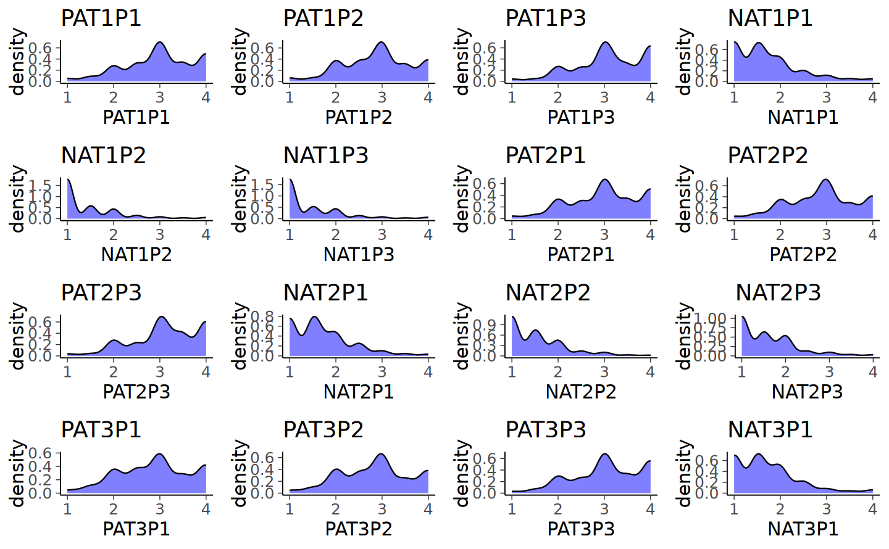

here::here("code", "_common.R") |>
source()
# Load packages
if (!requireNamespace("pacman")) install.packages("pacman")
pacman::p_load(kableExtra, lme4, gridExtra)74 Specificare e Interpretare un Modello Longitudinale
Prerequisiti
Concetti e Competenze Chiave
Preparazione del Notebook
74.1 Introduzione
Nel presente capitolo esploreremo i modelli panel longitudinali tradizionali, con un’attenzione particolare alla struttura simplex e alle tecniche per ottimizzare, interpretare e arricchire questi modelli con covariate e analisi degli effetti indiretti.
I modelli panel e i modelli SEM longitudinali si concentrano sulle relazioni predittive tra variabili latenti (ad esempio, atteggiamenti o abilità) e sulle loro variazioni nel tempo. Sebbene spesso usati come sinonimi, i modelli panel differiscono dai modelli di Confirmatory Factor Analysis (CFA) longitudinali: mentre i CFA analizzano la stabilità dei livelli medi dei costrutti, i modelli panel esplorano le interazioni dinamiche tra variabili nel corso del tempo. Un’importante distinzione va fatta anche con i modelli di crescita latente (LGM), che hanno l’obiettivo di mappare l’evoluzione temporale dei livelli medi di un costrutto, come il monitoraggio dello sviluppo di una competenza specifica.
Inoltre, le relazioni di regressione nei modelli panel suggeriscono un’interpretazione causale, ma questa deve essere affrontata con cautela. La causalità in questi modelli è implicata quando si osservano effetti predittivi coerenti nel tempo, ma è essenziale che i dati siano raccolti con rigore per permettere inferenze causali. Un elemento fondamentale è il controllo delle variabili confondenti, che permette di ridurre il rischio di bias e di migliorare la robustezza delle inferenze.
74.2 Il Processo di Cambiamento Simplex
Un modello efficace per rappresentare il cambiamento continuo e graduale nel tempo è la struttura simplex. Questa struttura si basa sull’assunto che gli individui cambino a un ritmo stabile, con influenze esterne minime. Nel modello simplex, la correlazione tra punti temporali decresce in modo prevedibile, secondo una progressione graduale. La Tabella 1 illustra una struttura di correlazione simplex in cui la stabilità decresce col passare del tempo.
Tabella 1. Esempi di Strutture di Correlazione Simplex.
| T1 | T2 | T3 | T4 | T5 | T6 | T7 | T8 | |
|---|---|---|---|---|---|---|---|---|
| T1 | – | .800 | .640 | .512 | .410 | .328 | .262 | .210 |
| T2 | .528 | – | .800 | .640 | .512 | .410 | .328 | .262 |
| T3 | .279 | .528 | – | .800 | .640 | .512 | .410 | .328 |
| T4 | .147 | .279 | .528 | – | .800 | .640 | .512 | .410 |
| T5 | .078 | .147 | .279 | .528 | – | .800 | .640 | .512 |
| T6 | .041 | .078 | .147 | .279 | .528 | – | .800 | .640 |
| T7 | .022 | .041 | .078 | .147 | .279 | .528 | – | .800 |
| T8 | .011 | .022 | .041 | .078 | .147 | .279 | .528 | – |
Nota: Le correlazioni sopra la diagonale sono basate sull’analogia del mescolamento delle carte con una correlazione autoregressiva di .528. Le correlazioni sotto la diagonale si basano su una stabilità iniziale più elevata (.80), indicando una persistenza più forte nel tempo.
Nel modello simplex, il cambiamento graduale e stabile è rappresentato da un coefficiente di stabilità costante tra punti temporali consecutivi, simile alla correlazione tra l’ordine delle carte in un mazzo dopo diverse mescolate.
L’esempio del mazzo di carte mescolato è una metafora utile per comprendere come funziona una struttura di correlazione simplex e il concetto di autoregressività nei modelli longitudinali. Immaginiamo di avere un mazzo di carte perfettamente ordinato, in cui ogni carta ha una posizione specifica. Ogni volta che mescoliamo il mazzo, l’ordine cambia, ma non in modo totalmente casuale: la disposizione iniziale ha ancora una certa influenza sull’ordine risultante dopo la mescolata.
74.2.1 Mescolamento e Correlazione
Se consideriamo l’ordine delle carte prima e dopo una singola mescolata, possiamo calcolare la correlazione tra la posizione delle carte iniziale e quella dopo il mescolamento. Una sola mescolata modifica la disposizione delle carte, ma mantiene una certa somiglianza con l’ordine iniziale: diciamo, per esempio, che la correlazione è di 0.528. Questa correlazione rappresenta la stabilità del cambiamento: dopo una singola mescolata, le carte non sono ancora completamente in un ordine casuale.
Ogni successiva mescolata riduce ulteriormente questa correlazione. Dopo una seconda mescolata, la correlazione tra l’ordine originale e il nuovo ordine sarà inferiore, ad esempio 0.279. Con il terzo mescolamento, la correlazione continua a decrescere, e così via. Dopo circa sette mescolate perfette, l’ordine diventa quasi del tutto casuale, con una correlazione vicino a 0 rispetto all’ordine iniziale.
74.2.2 Cosa Rappresenta nel Contesto dei Modelli Longitudinali
In un modello longitudinale con struttura simplex, ogni “mescolata” rappresenta un passaggio temporale in cui un fenomeno cambia gradualmente ma in modo prevedibile. La correlazione tra i punti temporali successivi diminuisce man mano che ci si allontana dal punto di partenza, proprio come la correlazione dell’ordine delle carte diminuisce con ogni mescolata.
- Correlazione tra punti temporali consecutivi: rappresenta la stabilità immediata del costrutto. Più è alta la correlazione tra misurazioni consecutive, maggiore è la stabilità del fenomeno nel tempo.
- Correlazione tra punti temporali distanti: rappresenta quanto il fenomeno rimanga stabile su periodi più lunghi. Una diminuzione graduale della correlazione, come nell’esempio del mazzo di carte, è tipica di processi che cambiano in modo costante ma senza grandi sconvolgimenti improvvisi.
In conclusione, l’esempio del mazzo di carte ci aiuta a visualizzare come un modello simplex cattura il cambiamento graduale e prevedibile in un processo. Ogni passaggio temporale influenza il successivo, ma con il tempo questa influenza diminuisce, portando a una correlazione minore tra i punti temporali distanti.
Questa struttura è utile nei modelli panel longitudinali perché descrive una dinamica di cambiamento continua e coerente, tipica di molti fenomeni psicologici e sociali che evolvono in modo graduale e prevedibile nel tempo.

74.2.3 Modelli Simplex e Modelli Autoregressivi (AR1 e AR2)
In termini formali, possiamo dire che la struttura simplex può essere vista come un’istanza di un modello autoregressivo di primo ordine (AR1), in cui ogni punto temporale è correlato solo con il precedente. Nei modelli AR1, l’effetto di ogni variabile dipende unicamente dalla sua osservazione immediatamente precedente. Per processi che mostrano maggiore persistenza nel tempo, si può invece adottare un modello autoregressivo di secondo ordine (AR2), dove ogni punto è influenzato non solo dal precedente, ma anche dal punto ancora precedente.
Il modello AR2 suggerisce che l’influenza persiste per due passaggi temporali, implicando una stabilità più duratura rispetto al modello AR1. Questo approccio è utile per rappresentare processi in cui l’effetto di un evento non si dissipa immediatamente, ma ha un’influenza estesa nel tempo.
74.2.4 Applicazioni della Struttura Simplex nella Ricerca Psicologica
In psicologia e scienze sociali, il modello simplex è frequentemente usato per studiare processi di cambiamento in campioni longitudinali. La semplicità di questa struttura la rende una scelta ideale per rappresentare fenomeni evolutivi graduali, come lo sviluppo di competenze o il cambiamento di atteggiamenti. La struttura simplex può anche essere estesa con l’inclusione di variabili contestuali, il che ne aumenta la flessibilità senza compromettere la chiarezza.
Per comprendere la natura di un processo di cambiamento, è essenziale che il modello predittivo catturi correttamente il ritmo del cambiamento stesso. Una frequenza di misurazione adeguata permette di rilevare con precisione la velocità e la consistenza delle variazioni, aumentando la validità delle inferenze che si possono trarre.
In sintesi, i modelli panel longitudinali e la struttura simplex offrono potenti strumenti per analizzare il cambiamento e le relazioni temporali nei dati longitudinali. La struttura simplex, in particolare, è una rappresentazione versatile ed efficace dei processi di cambiamento graduale, utile per studiare fenomeni psicologici ed evolutivi in modo teoricamente informato e statisticamente robusto.
74.2.5 Modello Simplex per il Mescolamento di Carte
Esaminiamo qui di seguto l’implementazione del modello Simplex proposta da Little (2023) per i dati artificiali relativi all’esempio del mazzo di carte discusso in precedenza.
tri_corr <- c(
1, rep(0, 7),
0.523, 1, rep(0, 6),
0.279, 0.523, 1, rep(0, 5),
0.147, 0.279, 0.523, 1, rep(0, 4),
0.078, 0.147, 0.279, 0.523, 1, rep(0, 3),
0.041, 0.078, 0.147, 0.279, 0.523, 1, rep(0, 2),
0.022, 0.041, 0.078, 0.147, 0.279, 0.523, 1, 0,
0.011, 0.022, 0.041, 0.078, 0.147, 0.279, 0.523, 1
)
upper <- matrix(tri_corr, 8, byrow = FALSE)
lower <- matrix(tri_corr, 8, byrow = TRUE)
mycorr <- upper + lower - diag(8)
rownames(mycorr) <- c("Time1", "Time2", "Time3", "Time4", "Time5", "Time6", "Time7", "Time8")
colnames(mycorr) <- c("Time1", "Time2", "Time3", "Time4", "Time5", "Time6", "Time7", "Time8")
mynob <- 166
mycorr |> print() Time1 Time2 Time3 Time4 Time5 Time6 Time7 Time8
Time1 1.000 0.523 0.279 0.147 0.078 0.041 0.022 0.011
Time2 0.523 1.000 0.523 0.279 0.147 0.078 0.041 0.022
Time3 0.279 0.523 1.000 0.523 0.279 0.147 0.078 0.041
Time4 0.147 0.279 0.523 1.000 0.523 0.279 0.147 0.078
Time5 0.078 0.147 0.279 0.523 1.000 0.523 0.279 0.147
Time6 0.041 0.078 0.147 0.279 0.523 1.000 0.523 0.279
Time7 0.022 0.041 0.078 0.147 0.279 0.523 1.000 0.523
Time8 0.011 0.022 0.041 0.078 0.147 0.279 0.523 1.000mod6_2 <- "
Time2 ~ Time1
Time3 ~ Time2
Time4 ~ Time3
Time5 ~ Time4
Time6 ~ Time5
Time7 ~ Time6
Time8 ~ Time7
Time1 ~~ 1*Time1
Time2 ~~ Time2
Time3 ~~ Time3
Time4 ~~ Time4
Time5 ~~ Time5
Time6 ~~ Time6
Time7 ~~ Time7
Time8 ~~ Time8
"fit6_2 <- lavaan(mod6_2, sample.cov = mycorr, sample.nobs = mynob, fixed.x = FALSE)parameterEstimates(fit6_2) |> print() lhs op rhs est se z pvalue ci.lower ci.upper
1 Time2 ~ Time1 0.523 0.066 7.930 0 0.394 0.652
2 Time3 ~ Time2 0.523 0.066 7.912 0 0.393 0.653
3 Time4 ~ Time3 0.523 0.066 7.908 0 0.393 0.653
4 Time5 ~ Time4 0.523 0.066 7.906 0 0.393 0.653
5 Time6 ~ Time5 0.523 0.066 7.906 0 0.393 0.653
6 Time7 ~ Time6 0.523 0.066 7.906 0 0.393 0.653
7 Time8 ~ Time7 0.523 0.066 7.906 0 0.393 0.653
8 Time1 ~~ Time1 1.000 0.000 NA NA 1.000 1.000
9 Time2 ~~ Time2 0.722 0.079 9.110 0 0.567 0.877
10 Time3 ~~ Time3 0.722 0.079 9.110 0 0.567 0.877
11 Time4 ~~ Time4 0.722 0.079 9.110 0 0.567 0.877
12 Time5 ~~ Time5 0.722 0.079 9.110 0 0.567 0.877
13 Time6 ~~ Time6 0.722 0.079 9.110 0 0.567 0.877
14 Time7 ~~ Time7 0.722 0.079 9.110 0 0.567 0.877
15 Time8 ~~ Time8 0.722 0.079 9.110 0 0.567 0.877Nel commentare il modello Simplex specificato, si può osservare che, per i dati artificiali in questione, la stima della correlazione tra costrutti latenti in momenti successivi risulta costante, con un valore di 0.523. Questo dato è in linea con i risultati ottenuti da Little (2023), che riporta una correlazione di 0.528. È importante notare la consistenza in queste stime, indicativa di una relazione stabile nel tempo tra i costrutti.
Inoltre, il modello mostra che la varianza delle variabili latenti rimane relativamente costante nel tempo, con un valore di 0.722. Questo suggerisce che, nonostante il passare del tempo e i possibili cambiamenti nei costrutti, la quantità di varianza che essi spiegano rimane simile. Un’eccezione a questo schema si trova nella varianza al Tempo 1, che è stata fissata a 1. Questa scelta metodologica è comune in molti modelli di serie temporali per stabilire un punto di riferimento o una scala di misurazione per le varianze nei tempi successivi.
Rifocalizziamoci sulle correlazioni nella parte inferiore della diagonale della Tabella 1, dove possiamo osservare una stabilità piuttosto elevata tra punti temporali successivi, con una correlazione di 0.80 tra ciascun punto temporale e il successivo. Tuttavia, all’aumentare dell’intervallo tra le misurazioni, la correlazione tra punti temporali distanti diminuisce in modo graduale e prevedibile. Ad esempio, nella tabella, la correlazione tra Tempo 1 e Tempo 3 è di 0.64, lo stesso valore che troviamo tra Tempo 2 e Tempo 4, tra Tempo 5 e Tempo 7, e così via per ogni coppia di punti temporali separati da uno spazio temporale intermedio. Alla massima distanza, la correlazione tra Tempo 1 e Tempo 8 è ancora leggermente positiva, pari a 0.210; con un numero crescente di punti temporali, questa correlazione si avvicinerebbe gradualmente a zero.
Questo schema di correlazioni evidenzia che, mentre la stabilità a breve termine (tra punti temporali adiacenti) è elevata, essa diminuisce all’aumentare della distanza tra le misurazioni. Questo riflette una riduzione dell’influenza o della connessione tra i costrutti latenti misurati a intervalli temporali più lunghi.
Nel triangolo superiore della tabella, la stabilità tra punti temporali adiacenti è più bassa, con una correlazione di 0.528. Qui, i punti temporali bi-contigui (separati da un intervallo intermedio) si correlano a 0.279 e la correlazione tra i punti più distanti, da Tempo 1 a Tempo 8, scende a 0.011, praticamente nulla. Entrambi questi schemi riflettono un tasso costante di cambiamento e sono ben rappresentati da un modello autoregressivo simplex.
Un modello autoregressivo simplex è in grado di riprodurre tutte queste correlazioni attraverso effetti indiretti: nel modello, l’influenza del Tempo 1 sul Tempo 8 viene trasmessa indirettamente attraverso una sequenza di influenze dirette da un punto temporale al successivo (es., da Tempo 1 a Tempo 2, da Tempo 2 a Tempo 3, e così via fino a Tempo 8). Questo passaggio continuo di influenze permette di riprodurre lo schema di correlazioni osservato nella Tabella 1. Utilizzando le regole di tracciamento dei percorsi in un modello autoregressivo, possiamo osservare come questo schema di correlazioni diminuisca progressivamente, evidenziando il modo in cui il modello rappresenta il declino della connessione tra i punti temporali man mano che aumenta la distanza tra essi.
0.523^{2:7} |>
round(3) |>
print()[1] 0.274 0.143 0.075 0.039 0.020 0.011Il modello presentato nella (little-fig-simplex?) è un modello Simplex univariato perché include un solo costrutto, rappresentato in più punti temporali. È importante notare che, in un modello come questo, si verifica e si garantisce la forte invarianza fattoriale del modello di misurazione. Inoltre, i residui corrispondenti presentano unicità correlate nel tempo per ogni occorrenza dello stesso indicatore. I coefficienti di percorso in questo modello riproducono perfettamente le correlazioni nella parte superiore della Tabella 1.
Lo stesso modello, quando applicato all’altro insieme di correlazioni nella Tabella 1, riprodurrebbe altrettanto perfettamente il pattern di correlazione. Gli effetti diretti in ciascun punto temporale adiacente sarebbero di .8, mentre l’effetto indiretto sarebbe il prodotto multiplo dei coefficienti di percorso diretti. Questo approccio mette in evidenza come le correlazioni tra punti temporali più lontani siano il risultato di una serie di influenze dirette che si susseguono nel tempo.
74.3 Basi di un Modello Panel
Consideriamo ora il modello panel. Nella costruzione di un modello panel, le associazioni tra variabili osservate in momenti diversi sono spesso trasformate in percorsi di regressione direzionali. Le covarianze tra variabili al Tempo 1 sono generalmente viste come associazioni “a ordine zero,” ovvero associazioni non controllate per altre variabili. Nei momenti successivi, le covarianze tra variabili rappresentano invece varianze residue, o “fattori di disturbo,” ossia componenti di varianza non spiegate dagli effetti temporali precedenti.
Un concetto chiave nei modelli panel è il percorso autoregressivo, che rappresenta la relazione predittiva tra lo stesso costrutto in momenti successivi. In aggiunta, i modelli panel possono includere effetti incrociati ritardati (o cross-lagged), dove una variabile predice un’altra variabile in un momento futuro. Entrambi questi tipi di percorso permettono di osservare le dinamiche temporali e la persistenza di influenze tra variabili.

74.3.1 Modello Panel per Affetto Positivo e Negativo
La figura (little-fig-simplex?) approfondisce l’uso dei modelli longitudinali tramite un esempio di modello CFA per studiare l’affetto positivo e negativo negli adolescenti. A differenza di un’analisi limitata a soli due punti temporali, questo esempio illustra una configurazione più complessa, in cui i due costrutti (affetto positivo e negativo) vengono misurati in tre momenti distinti. Questa struttura a più punti temporali permette di esaminare come i livelli di affetto positivo e negativo cambiano nel tempo e di osservare le interazioni tra i costrutti lungo diverse fasi della misurazione.
I dati sono i seguenti.
dat <- read.table(
file = "../../data/grade7and8.long.823.dat",
col.names = c(
"PAT1P1", "PAT1P2", "PAT1P3", "NAT1P1", "NAT1P2", "NAT1P3",
"PAT2P1", "PAT2P2", "PAT2P3", "NAT2P1", "NAT2P2", "NAT2P3",
"PAT3P1", "PAT3P2", "PAT3P3", "NAT3P1", "NAT3P2", "NAT3P3",
"grade", "female", "black", "hispanic", "other"
)
)psych::describe(dat[, 1:18])| vars | n | mean | sd | median | trimmed | mad | min | max | range | skew | kurtosis | se | |
|---|---|---|---|---|---|---|---|---|---|---|---|---|---|
| <int> | <dbl> | <dbl> | <dbl> | <dbl> | <dbl> | <dbl> | <dbl> | <dbl> | <dbl> | <dbl> | <dbl> | <dbl> | |
| PAT1P1 | 1 | 823 | 2.991885 | 0.7644692 | 3.00000 | 3.042751 | 0.7413000 | 1 | 4 | 3 | -0.4591316 | -0.3486015 | 0.02664772 |
| PAT1P2 | 2 | 823 | 2.895543 | 0.7471531 | 3.00000 | 2.919860 | 0.7413000 | 1 | 4 | 3 | -0.2986814 | -0.3732379 | 0.02604412 |
| PAT1P3 | 3 | 823 | 3.112289 | 0.7481646 | 3.00000 | 3.175932 | 0.7413000 | 1 | 4 | 3 | -0.5761073 | -0.2344880 | 0.02607938 |
| NAT1P1 | 4 | 823 | 1.706311 | 0.7057569 | 1.50000 | 1.596773 | 0.7413000 | 1 | 4 | 3 | 1.2112142 | 1.2584152 | 0.02460114 |
| NAT1P2 | 5 | 823 | 1.450148 | 0.6576346 | 1.00000 | 1.312657 | 0.0000000 | 1 | 4 | 3 | 1.7700996 | 3.1319596 | 0.02292370 |
| NAT1P3 | 6 | 823 | 1.453063 | 0.6678318 | 1.00000 | 1.311948 | 0.0000000 | 1 | 4 | 3 | 1.8185647 | 3.3558790 | 0.02327915 |
| PAT2P1 | 7 | 823 | 3.001628 | 0.7599034 | 3.00000 | 3.044683 | 0.7413000 | 1 | 4 | 3 | -0.4055187 | -0.5083138 | 0.02648857 |
| PAT2P2 | 8 | 823 | 2.909043 | 0.7491414 | 3.00000 | 2.936239 | 0.7413000 | 1 | 4 | 3 | -0.2667719 | -0.5077469 | 0.02611343 |
| PAT2P3 | 9 | 823 | 3.126799 | 0.7295410 | 3.09211 | 3.189561 | 0.8778623 | 1 | 4 | 3 | -0.6282730 | -0.1499079 | 0.02543020 |
| NAT2P1 | 10 | 823 | 1.695210 | 0.6614440 | 1.50000 | 1.606124 | 0.7413000 | 1 | 4 | 3 | 1.1219909 | 1.2251472 | 0.02305649 |
| NAT2P2 | 11 | 823 | 1.537798 | 0.6225102 | 1.50000 | 1.429653 | 0.7413000 | 1 | 4 | 3 | 1.3883623 | 1.9372133 | 0.02169934 |
| NAT2P3 | 12 | 823 | 1.580027 | 0.6499109 | 1.50000 | 1.471439 | 0.7413000 | 1 | 4 | 3 | 1.3401267 | 1.8529497 | 0.02265447 |
| PAT3P1 | 13 | 823 | 2.886528 | 0.7823545 | 3.00000 | 2.917427 | 0.7413000 | 1 | 4 | 3 | -0.2178390 | -0.7223282 | 0.02727116 |
| PAT3P2 | 14 | 823 | 2.849560 | 0.7624570 | 3.00000 | 2.868214 | 0.7413000 | 1 | 4 | 3 | -0.1687695 | -0.6306593 | 0.02657758 |
| PAT3P3 | 15 | 823 | 3.056508 | 0.7484883 | 3.00000 | 3.107101 | 0.7413000 | 1 | 4 | 3 | -0.4511290 | -0.5120333 | 0.02609066 |
| NAT3P1 | 16 | 823 | 1.723787 | 0.6912895 | 1.50000 | 1.623666 | 0.7413000 | 1 | 4 | 3 | 1.2328507 | 1.5654947 | 0.02409684 |
| NAT3P2 | 17 | 823 | 1.575689 | 0.6600865 | 1.50000 | 1.469134 | 0.7413000 | 1 | 4 | 3 | 1.3962112 | 2.0916581 | 0.02300917 |
| NAT3P3 | 18 | 823 | 1.641652 | 0.6980201 | 1.50000 | 1.533856 | 0.7413000 | 1 | 4 | 3 | 1.1666457 | 1.0690468 | 0.02433145 |
plots_list <- list()
# Creazione della lista di grafici con i pannelli più grandi
plots_list <- list()
for (i in 1:16) {
col_name <- names(dat)[i]
p <- ggplot(dat, aes(x = !!sym(col_name))) +
geom_density(fill = "blue", color = "black", alpha = 0.5) +
ggtitle(col_name)
plots_list[[i]] <- p
}
# Organizza e visualizza i grafici con pannelli più grandi
do.call(grid.arrange, c(plots_list, ncol = 4)) 
Iniziamo a specificare il modello nullo.
mod_null <- "
PAT1P1 ~~ V1*PAT1P1
PAT1P2 ~~ V2*PAT1P2
PAT1P3 ~~ V3*PAT1P3
NAT1P1 ~~ V4*NAT1P1
NAT1P2 ~~ V5*NAT1P2
NAT1P3 ~~ V6*NAT1P3
PAT2P1 ~~ V1*PAT2P1
PAT2P2 ~~ V2*PAT2P2
PAT2P3 ~~ V3*PAT2P3
NAT2P1 ~~ V4*NAT2P1
NAT2P2 ~~ V5*NAT2P2
NAT2P3 ~~ V6*NAT2P3
PAT3P1 ~~ V1*PAT3P1
PAT3P2 ~~ V2*PAT3P2
PAT3P3 ~~ V3*PAT3P3
NAT3P1 ~~ V4*NAT3P1
NAT3P2 ~~ V5*NAT3P2
NAT3P3 ~~ V6*NAT3P3
PAT1P1 ~ T1*1
PAT1P2 ~ T2*1
PAT1P3 ~ T3*1
NAT1P1 ~ T4*1
NAT1P2 ~ T5*1
NAT1P3 ~ T6*1
PAT2P1 ~ T1*1
PAT2P2 ~ T2*1
PAT2P3 ~ T3*1
NAT2P1 ~ T4*1
NAT2P2 ~ T5*1
NAT2P3 ~ T6*1
PAT3P1 ~ T1*1
PAT3P2 ~ T2*1
PAT3P3 ~ T3*1
NAT3P1 ~ T4*1
NAT3P2 ~ T5*1
NAT3P3 ~ T6*1
"Il modello nullo (baseline) è usato da Little (2023) come punto di partenza nell’analisi SEM e per i confronti con modelli più complessi. Il modello nullo specifica sei variabili osservate (PAT1P1, PAT1P2, PAT1P3, NAT1P1, NAT1P2, NAT1P3) misurate in tre punti temporali distinti. Questo implica che ci sono 18 variabili osservate in totale. Ogni variabile osservata ha la propria varianza unica che è stimata nel modello. Le medie delle 6 variabili misurate in ciascuno dei tre punti temporali sono assunte non variare in funzione del tempo. Nonostante il modello prenda in considerazione misurazioni ripetute nel tempo, non vi è alcuna specificazione di correlazioni o percorsi causali tra queste misure nel tempo, come sarebbe tipico per i modelli longitudinali. Essendo un modello nullo, non vengono specificate relazioni tra le variabili (varianze e medie) diverse dai loro effetti unici.
fit_null <- lavaan(mod_null, data = dat, orthogonal = TRUE)summary(fit_null, standardized = T, fit.measures = TRUE) |> print()lavaan 0.6-19 ended normally after 32 iterations
Estimator ML
Optimization method NLMINB
Number of model parameters 36
Number of equality constraints 24
Number of observations 823
Model Test User Model:
Test statistic 11213.103
Degrees of freedom 177
P-value (Chi-square) 0.000
Model Test Baseline Model:
Test statistic 11131.067
Degrees of freedom 153
P-value 0.000
User Model versus Baseline Model:
Comparative Fit Index (CFI) 0.000
Tucker-Lewis Index (TLI) 0.131
Loglikelihood and Information Criteria:
Loglikelihood user model (H0) -15975.145
Loglikelihood unrestricted model (H1) -10368.594
Akaike (AIC) 31974.291
Bayesian (BIC) 32030.846
Sample-size adjusted Bayesian (SABIC) 31992.739
Root Mean Square Error of Approximation:
RMSEA 0.275
90 Percent confidence interval - lower 0.271
90 Percent confidence interval - upper 0.280
P-value H_0: RMSEA <= 0.050 0.000
P-value H_0: RMSEA >= 0.080 1.000
Standardized Root Mean Square Residual:
SRMR 0.328
Parameter Estimates:
Standard errors Standard
Information Expected
Information saturated (h1) model Structured
Intercepts:
Estimate Std.Err z-value P(>|z|) Std.lv Std.all
PAT1P1 (T1) 2.960 0.016 190.946 0.000 2.960 3.843
PAT1P2 (T2) 2.885 0.015 190.376 0.000 2.885 3.831
PAT1P3 (T3) 3.099 0.015 207.418 0.000 3.099 4.174
NAT1P1 (T4) 1.708 0.014 123.730 0.000 1.708 2.490
NAT1P2 (T5) 1.521 0.013 116.519 0.000 1.521 2.345
NAT1P3 (T6) 1.558 0.014 114.474 0.000 1.558 2.304
PAT2P1 (T1) 2.960 0.016 190.946 0.000 2.960 3.843
PAT2P2 (T2) 2.885 0.015 190.376 0.000 2.885 3.831
PAT2P3 (T3) 3.099 0.015 207.418 0.000 3.099 4.174
NAT2P1 (T4) 1.708 0.014 123.730 0.000 1.708 2.490
NAT2P2 (T5) 1.521 0.013 116.519 0.000 1.521 2.345
NAT2P3 (T6) 1.558 0.014 114.474 0.000 1.558 2.304
PAT3P1 (T1) 2.960 0.016 190.946 0.000 2.960 3.843
PAT3P2 (T2) 2.885 0.015 190.376 0.000 2.885 3.831
PAT3P3 (T3) 3.099 0.015 207.418 0.000 3.099 4.174
NAT3P1 (T4) 1.708 0.014 123.730 0.000 1.708 2.490
NAT3P2 (T5) 1.521 0.013 116.519 0.000 1.521 2.345
NAT3P3 (T6) 1.558 0.014 114.474 0.000 1.558 2.304
Variances:
Estimate Std.Err z-value P(>|z|) Std.lv Std.all
PAT1P1 (V1) 0.593 0.017 35.135 0.000 0.593 1.000
PAT1P2 (V2) 0.567 0.016 35.135 0.000 0.567 1.000
PAT1P3 (V3) 0.551 0.016 35.135 0.000 0.551 1.000
NAT1P1 (V4) 0.471 0.013 35.135 0.000 0.471 1.000
NAT1P2 (V5) 0.421 0.012 35.135 0.000 0.421 1.000
NAT1P3 (V6) 0.457 0.013 35.135 0.000 0.457 1.000
PAT2P1 (V1) 0.593 0.017 35.135 0.000 0.593 1.000
PAT2P2 (V2) 0.567 0.016 35.135 0.000 0.567 1.000
PAT2P3 (V3) 0.551 0.016 35.135 0.000 0.551 1.000
NAT2P1 (V4) 0.471 0.013 35.135 0.000 0.471 1.000
NAT2P2 (V5) 0.421 0.012 35.135 0.000 0.421 1.000
NAT2P3 (V6) 0.457 0.013 35.135 0.000 0.457 1.000
PAT3P1 (V1) 0.593 0.017 35.135 0.000 0.593 1.000
PAT3P2 (V2) 0.567 0.016 35.135 0.000 0.567 1.000
PAT3P3 (V3) 0.551 0.016 35.135 0.000 0.551 1.000
NAT3P1 (V4) 0.471 0.013 35.135 0.000 0.471 1.000
NAT3P2 (V5) 0.421 0.012 35.135 0.000 0.421 1.000
NAT3P3 (V6) 0.457 0.013 35.135 0.000 0.457 1.000
74.3.2 Modello SEM Iniziale
Nel modello SEM iniziale, Little (2023) definisce sei variabili latenti (Pos1, Pos2, Pos3, Neg1, Neg2, Neg3) che rappresentano costrutti psicologici positivi e negativi misurati in tre diversi momenti temporali. Ogni variabile latente è identificato da tre indicatori (per esempio, Pos1 è identificato da PAT1P1, PAT1P2, PAT1P3), con saturazioni fattoriali L1, L2, L3 che quantificano la relazione tra la variabile latenti e i suoi indicatori. Il modello stima la varianza di ciascuna variabile latente e la covarianza tra variabili latenti diverse. Le medie delle variabili latenti sono impostate a 1, indicando che sono considerate fisse. Il modello include stime per la varianza e la covarianza degli indicatori attraverso il tempo, suggerendo l’esistenza di correlazioni temporali tra gli stessi indicatori misurati in momenti diversi. Ci sono percorsi di regressione che collegano le variabili latenti nel tempo (ad esempio, Pos2 è influenzata da Pos1). Il modello impone alcuni vincoli sulle saturazioni fattoriali e sulle intercette degli indicatori.
Questo modello mira a esplorare le relazioni dinamiche e temporali tra variabili latenti, diversamente da un modello di invarianza configurale, che è più orientato alla valutazione della costanza della struttura fattoriale.
SEMmod <- "
Pos1 =~ L1*PAT1P1 + L2*PAT1P2 + L3*PAT1P3
Neg1 =~ L4*NAT1P1 + L5*NAT1P2 + L6*NAT1P3
Pos2 =~ L1*PAT2P1 + L2*PAT2P2 + L3*PAT2P3
Neg2 =~ L4*NAT2P1 + L5*NAT2P2 + L6*NAT2P3
Pos3 =~ L1*PAT3P1 + L2*PAT3P2 + L3*PAT3P3
Neg3 =~ L4*NAT3P1 + L5*NAT3P2 + L6*NAT3P3
## Latent factor variance and covariance (Psi matrix)
Pos1 ~~ Pos1 ##Psi 1,1
Pos1 ~~ Neg1 ##Psi 1,2
Neg1 ~~ Neg1 ##Psi 2,2
Pos2 ~~ Pos2 ##Psi 3,3
Pos2 ~~ Neg2 ##Psi 3,4
Neg2 ~~ Neg2 ##Psi 4,4
Pos3 ~~ Pos3 ##Psi 5,5
Pos3 ~~ Neg3 ##Psi 5,6
Neg3 ~~ Neg3 ##Psi 6,6
## Latent means (Alpha matrix)
Pos1 ~ 1
Neg1 ~ 1
Pos2 ~ 1
Neg2 ~ 1
Pos3 ~ 1
Neg3 ~ 1
## indicator resduals var-covar (Theta-Epsilon matrix)
## Time1
PAT1P1 ~~ PAT1P1
PAT1P1 ~~ PAT2P1
PAT1P1 ~~ PAT3P1
PAT1P2 ~~ PAT1P2
PAT1P2 ~~ PAT2P2
PAT1P2 ~~ PAT3P2
PAT1P3 ~~ PAT1P3
PAT1P3 ~~ PAT2P3
PAT1P3 ~~ PAT3P3
NAT1P1 ~~ NAT1P1
NAT1P1 ~~ NAT2P1
NAT1P1 ~~ NAT3P1
NAT1P2 ~~ NAT1P2
NAT1P2 ~~ NAT2P2
NAT1P2 ~~ NAT3P2
NAT1P3 ~~ NAT1P3
NAT1P3 ~~ NAT2P3
NAT1P3 ~~ NAT3P3
#Time2
PAT2P1 ~~ PAT2P1
PAT2P1 ~~ PAT3P1
PAT2P2 ~~ PAT2P2
PAT2P2 ~~ PAT3P2
PAT2P3 ~~ PAT2P3
PAT2P3 ~~ PAT3P3
NAT2P1 ~~ NAT2P1
NAT2P1 ~~ NAT3P1
NAT2P2 ~~ NAT2P2
NAT2P2 ~~ NAT3P2
NAT2P3 ~~ NAT2P3
NAT2P3 ~~ NAT3P3
## Time3
PAT3P1 ~~ PAT3P1
PAT3P2 ~~ PAT3P2
PAT3P3 ~~ PAT3P3
NAT3P1 ~~ NAT3P1
NAT3P2 ~~ NAT3P2
NAT3P3 ~~ NAT3P3
##Indicator means/intercepts (Tau vector)
PAT1P1 ~ t1*1
PAT1P2 ~ t2*1
PAT1P3 ~ t3*1
NAT1P1 ~ t4*1
NAT1P2 ~ t5*1
NAT1P3 ~ t6*1
PAT2P1 ~ t1*1
PAT2P2 ~ t2*1
PAT2P3 ~ t3*1
NAT2P1 ~ t4*1
NAT2P2 ~ t5*1
NAT2P3 ~ t6*1
PAT3P1 ~ t1*1
PAT3P2 ~ t2*1
PAT3P3 ~ t3*1
NAT3P1 ~ t4*1
NAT3P2 ~ t5*1
NAT3P3 ~ t6*1
##Regression paths here
Pos2 ~ Pos1
Pos3 ~ Pos1 + Pos2
Neg2 ~ Neg1
Neg3 ~ Neg1 + Neg2
## Constraints
L1 == 3 - L2 - L3
L4 == 3 - L5 - L6
t1 == 0 - t2 - t3
t4 == 0 - t5 - t6
"fitSEM <- lavaan(SEMmod, data = dat, meanstructure = TRUE)summary(fitSEM, standardized = TRUE, fit.measures = TRUE) |> print()lavaan 0.6-19 ended normally after 129 iterations
Estimator ML
Optimization method NLMINB
Number of model parameters 93
Number of equality constraints 28
Number of observations 823
Model Test User Model:
Test statistic 441.520
Degrees of freedom 124
P-value (Chi-square) 0.000
Model Test Baseline Model:
Test statistic 11131.067
Degrees of freedom 153
P-value 0.000
User Model versus Baseline Model:
Comparative Fit Index (CFI) 0.971
Tucker-Lewis Index (TLI) 0.964
Loglikelihood and Information Criteria:
Loglikelihood user model (H0) -10589.354
Loglikelihood unrestricted model (H1) -10368.594
Akaike (AIC) 21308.709
Bayesian (BIC) 21615.051
Sample-size adjusted Bayesian (SABIC) 21408.635
Root Mean Square Error of Approximation:
RMSEA 0.056
90 Percent confidence interval - lower 0.050
90 Percent confidence interval - upper 0.061
P-value H_0: RMSEA <= 0.050 0.044
P-value H_0: RMSEA >= 0.080 0.000
Standardized Root Mean Square Residual:
SRMR 0.045
Parameter Estimates:
Standard errors Standard
Information Expected
Information saturated (h1) model Structured
Latent Variables:
Estimate Std.Err z-value P(>|z|) Std.lv Std.all
Pos1 =~
PAT1P1 (L1) 1.040 0.010 103.232 0.000 0.684 0.884
PAT1P2 (L2) 0.997 0.010 98.450 0.000 0.655 0.881
PAT1P3 (L3) 0.963 0.010 93.311 0.000 0.633 0.856
Neg1 =~
NAT1P1 (L4) 0.957 0.012 78.547 0.000 0.553 0.757
NAT1P2 (L5) 0.999 0.011 90.776 0.000 0.578 0.891
NAT1P3 (L6) 1.044 0.011 94.041 0.000 0.604 0.906
Pos2 =~
PAT2P1 (L1) 1.040 0.010 103.232 0.000 0.692 0.910
PAT2P2 (L2) 0.997 0.010 98.450 0.000 0.663 0.900
PAT2P3 (L3) 0.963 0.010 93.311 0.000 0.641 0.877
Neg2 =~
NAT2P1 (L4) 0.957 0.012 78.547 0.000 0.525 0.816
NAT2P2 (L5) 0.999 0.011 90.776 0.000 0.548 0.873
NAT2P3 (L6) 1.044 0.011 94.041 0.000 0.573 0.890
Pos3 =~
PAT3P1 (L1) 1.040 0.010 103.232 0.000 0.699 0.900
PAT3P2 (L2) 0.997 0.010 98.450 0.000 0.671 0.864
PAT3P3 (L3) 0.963 0.010 93.311 0.000 0.648 0.856
Neg3 =~
NAT3P1 (L4) 0.957 0.012 78.547 0.000 0.566 0.837
NAT3P2 (L5) 0.999 0.011 90.776 0.000 0.591 0.888
NAT3P3 (L6) 1.044 0.011 94.041 0.000 0.617 0.869
Regressions:
Estimate Std.Err z-value P(>|z|) Std.lv Std.all
Pos2 ~
Pos1 0.550 0.033 16.667 0.000 0.544 0.544
Pos3 ~
Pos1 0.340 0.039 8.822 0.000 0.333 0.333
Pos2 0.372 0.038 9.848 0.000 0.368 0.368
Neg2 ~
Neg1 0.445 0.033 13.494 0.000 0.468 0.468
Neg3 ~
Neg1 0.285 0.038 7.470 0.000 0.279 0.279
Neg2 0.408 0.040 10.113 0.000 0.379 0.379
Covariances:
Estimate Std.Err z-value P(>|z|) Std.lv Std.all
Pos1 ~~
Neg1 -0.063 0.015 -4.293 0.000 -0.166 -0.166
.Pos2 ~~
.Neg2 -0.050 0.011 -4.503 0.000 -0.183 -0.183
.Pos3 ~~
.Neg3 -0.074 0.011 -6.758 0.000 -0.288 -0.288
.PAT1P1 ~~
.PAT2P1 0.010 0.006 1.630 0.103 0.010 0.089
.PAT3P1 0.007 0.007 1.039 0.299 0.007 0.058
.PAT1P2 ~~
.PAT2P2 0.007 0.006 1.236 0.217 0.007 0.065
.PAT3P2 0.013 0.007 1.922 0.055 0.013 0.097
.PAT1P3 ~~
.PAT2P3 0.012 0.006 1.866 0.062 0.012 0.088
.PAT3P3 0.012 0.007 1.723 0.085 0.012 0.081
.NAT1P1 ~~
.NAT2P1 0.027 0.007 3.603 0.000 0.027 0.151
.NAT3P1 0.009 0.007 1.230 0.219 0.009 0.052
.NAT1P2 ~~
.NAT2P2 0.001 0.005 0.105 0.916 0.001 0.006
.NAT3P2 0.006 0.005 1.169 0.242 0.006 0.066
.NAT1P3 ~~
.NAT2P3 -0.001 0.005 -0.178 0.859 -0.001 -0.011
.NAT3P3 -0.008 0.006 -1.410 0.159 -0.008 -0.081
.PAT2P1 ~~
.PAT3P1 -0.000 0.006 -0.068 0.946 -0.000 -0.004
.PAT2P2 ~~
.PAT3P2 0.005 0.006 0.776 0.438 0.005 0.039
.PAT2P3 ~~
.PAT3P3 0.010 0.006 1.538 0.124 0.010 0.072
.NAT2P1 ~~
.NAT3P1 0.011 0.006 1.810 0.070 0.011 0.081
.NAT2P2 ~~
.NAT3P2 0.008 0.005 1.621 0.105 0.008 0.088
.NAT2P3 ~~
.NAT3P3 -0.004 0.006 -0.674 0.500 -0.004 -0.037
Intercepts:
Estimate Std.Err z-value P(>|z|) Std.lv Std.all
Pos1 3.000 0.024 124.676 0.000 4.564 4.564
Neg1 1.520 0.021 71.493 0.000 2.629 2.629
.Pos2 1.361 0.101 13.447 0.000 2.047 2.047
.Neg2 0.929 0.053 17.429 0.000 1.693 1.693
.Pos3 0.787 0.107 7.373 0.000 1.171 1.171
.Neg3 0.558 0.064 8.746 0.000 0.944 0.944
.PAT1P1 (t1) -0.140 0.031 -4.557 0.000 -0.140 -0.181
.PAT1P2 (t2) -0.088 0.031 -2.855 0.004 -0.088 -0.118
.PAT1P3 (t3) 0.228 0.031 7.238 0.000 0.228 0.308
.NAT1P1 (t4) 0.174 0.021 8.467 0.000 0.174 0.239
.NAT1P2 (t5) -0.068 0.018 -3.706 0.000 -0.068 -0.105
.NAT1P3 (t6) -0.106 0.018 -5.760 0.000 -0.106 -0.159
.PAT2P1 (t1) -0.140 0.031 -4.557 0.000 -0.140 -0.184
.PAT2P2 (t2) -0.088 0.031 -2.855 0.004 -0.088 -0.120
.PAT2P3 (t3) 0.228 0.031 7.238 0.000 0.228 0.312
.NAT2P1 (t4) 0.174 0.021 8.467 0.000 0.174 0.271
.NAT2P2 (t5) -0.068 0.018 -3.706 0.000 -0.068 -0.108
.NAT2P3 (t6) -0.106 0.018 -5.760 0.000 -0.106 -0.165
.PAT3P1 (t1) -0.140 0.031 -4.557 0.000 -0.140 -0.180
.PAT3P2 (t2) -0.088 0.031 -2.855 0.004 -0.088 -0.114
.PAT3P3 (t3) 0.228 0.031 7.238 0.000 0.228 0.301
.NAT3P1 (t4) 0.174 0.021 8.467 0.000 0.174 0.258
.NAT3P2 (t5) -0.068 0.018 -3.706 0.000 -0.068 -0.102
.NAT3P3 (t6) -0.106 0.018 -5.760 0.000 -0.106 -0.150
Variances:
Estimate Std.Err z-value P(>|z|) Std.lv Std.all
Pos1 0.432 0.024 18.356 0.000 1.000 1.000
Neg1 0.334 0.018 18.207 0.000 1.000 1.000
.Pos2 0.311 0.018 17.618 0.000 0.704 0.704
.Neg2 0.235 0.014 17.253 0.000 0.781 0.781
.Pos3 0.281 0.017 16.941 0.000 0.621 0.621
.Neg3 0.237 0.014 16.908 0.000 0.679 0.679
.PAT1P1 0.131 0.010 13.048 0.000 0.131 0.219
.PAT1P2 0.124 0.009 13.290 0.000 0.124 0.224
.PAT1P3 0.147 0.010 14.824 0.000 0.147 0.268
.NAT1P1 0.228 0.013 17.665 0.000 0.228 0.427
.NAT1P2 0.086 0.007 11.609 0.000 0.086 0.206
.NAT1P3 0.080 0.008 10.338 0.000 0.080 0.180
.PAT2P1 0.099 0.008 12.300 0.000 0.099 0.171
.PAT2P2 0.104 0.008 13.261 0.000 0.104 0.191
.PAT2P3 0.124 0.008 14.911 0.000 0.124 0.231
.NAT2P1 0.139 0.009 16.035 0.000 0.139 0.335
.NAT2P2 0.094 0.007 13.123 0.000 0.094 0.238
.NAT2P3 0.086 0.007 11.805 0.000 0.086 0.208
.PAT3P1 0.115 0.010 11.900 0.000 0.115 0.190
.PAT3P2 0.153 0.011 14.459 0.000 0.153 0.253
.PAT3P3 0.153 0.010 14.904 0.000 0.153 0.267
.NAT3P1 0.136 0.009 15.347 0.000 0.136 0.299
.NAT3P2 0.094 0.008 12.323 0.000 0.094 0.212
.NAT3P3 0.123 0.009 13.525 0.000 0.123 0.244
Constraints:
|Slack|
L1 - (3-L2-L3) 0.000
L4 - (3-L5-L6) 0.000
t1 - (0-t2-t3) 0.000
t4 - (0-t5-t6) 0.000
74.4 Invarianza
L’invarianza nei modelli SEM panel è fondamentale per garantire che le misurazioni di un costrutto siano comparabili nel tempo. Nei modelli longitudinali, l’invarianza implica che il significato e la struttura di un costrutto rimangano stabili attraverso diverse occasioni di misurazione. Senza l’invarianza, qualsiasi cambiamento osservato potrebbe riflettere variazioni nella misurazione stessa, piuttosto che un cambiamento reale nel costrutto. Testare l’invarianza nei modelli SEM panel consente quindi di distinguere tra cambiamenti reali e artefatti della misurazione, supportando un’interpretazione valida delle traiettorie di sviluppo.
74.4.1 Modello di Invarianza Configurale
In un modello di invarianza configurale, ci si aspetta che la struttura fattoriale, cioè il numero di fattori e il pattern di carichi fattoriali, sia la stessa in tutti i gruppi o momenti temporali considerati.
Ogni variabile latente (Pos1, Pos2, Pos3, Neg1, Neg2, Neg3) è misurata da un set specifico di indicatori in ciascuno dei tre momenti temporali. Ad esempio, Pos1 è misurata da PAT1P1, PAT1P2, e PAT1P3. I carichi fattoriali (L1, L2, L3, ecc.) sono specificati separatamente per ogni momento temporale. I vincoli imposti (ad esempio, L1 == 3 - L2 - L3) indicano che ci sono alcune restrizioni nella relazione tra i carichi fattoriali. Questi vincoli sono utilizzati per testare l’uguaglianza dei carichi attraverso i diversi tempi.
Il modello stima separatamente la varianza di ciascun indicatore e di ciascuna variabile latente in ogni momento temporale. Il modello include covarianze sia tra gli indicatori in diversi momenti temporali sia tra le variabili latenti, suggerendo che esiste una correlazione tra le misurazioni nel tempo. Le medie delle variabili latenti e degli indicatori sono specificate imponendo alcuni vincoli (ad esempio, t1 == 0 - t2 - t3).
I vincoli imposti sui carichi fattoriali e sulle medie degli indicatori permettono di testare se la struttura fattoriale è consistente nel tempo, che è l’essenza dell’invarianza configurale.
mod_config <- "
Pos1 =~ L1*PAT1P1 + L2*PAT1P2 + L3*PAT1P3
Neg1 =~ L4*NAT1P1 + L5*NAT1P2 + L6*NAT1P3
Pos2 =~ L7*PAT2P1 + L8*PAT2P2 + L9*PAT2P3
Neg2 =~ L10*NAT2P1 + L11*NAT2P2 + L12*NAT2P3
Pos3 =~ L13*PAT3P1 + L14*PAT3P2 + L15*PAT3P3
Neg3 =~ L16*NAT3P1 + L17*NAT3P2 + L18*NAT3P3
L1 == 3 - L2 - L3
L4 == 3 - L5 - L6
L7 == 3 - L8 - L9
L10== 3 - L11- L12
L13== 3 - L14- L15
L16== 3 - L17- L18
PAT1P1~~PAT1P1
PAT1P2~~PAT1P2
PAT1P3~~PAT1P3
NAT1P1~~NAT1P1
NAT1P2~~NAT1P2
NAT1P3~~NAT1P3
PAT2P1~~PAT2P1
PAT2P2~~PAT2P2
PAT2P3~~PAT2P3
NAT2P1~~NAT2P1
NAT2P2~~NAT2P2
NAT2P3~~NAT2P3
PAT3P1~~PAT3P1
PAT3P2~~PAT3P2
PAT3P3~~PAT3P3
NAT3P1~~NAT3P1
NAT3P2~~NAT3P2
NAT3P3~~NAT3P3
Pos1~~Pos1
Neg1~~Neg1
Pos2~~Pos2
Neg2~~Neg2
Pos3~~Pos3
Neg3~~Neg3
PAT1P1~~PAT2P1 + PAT3P1
PAT2P1~~PAT3P1
PAT1P2~~PAT2P2 + PAT3P2
PAT2P2~~PAT3P2
PAT1P3~~PAT2P3 + PAT3P3
PAT2P3~~PAT3P3
NAT1P1~~NAT2P1 + NAT3P1
NAT2P1~~NAT3P1
NAT1P2~~NAT2P2 + NAT3P2
NAT2P2~~NAT3P2
NAT1P3~~NAT2P3 + NAT3P3
NAT2P3~~NAT3P3
Pos1~~Pos2 + Pos3 + Neg1 + Neg2 + Neg3
Pos2~~Pos3 + Neg1 + Neg2 + Neg3
Pos3~~Neg1 + Neg2 + Neg3
Neg1~~Neg2 + Neg3
Neg2~~Neg3
Pos1~NA*1
Neg1~NA*1
Pos2~NA*1
Neg2~NA*1
Pos3~NA*1
Neg3~NA*1
PAT1P1~t1*1
PAT1P2~t2*1
PAT1P3~t3*1
NAT1P1~t4*1
NAT1P2~t5*1
NAT1P3~t6*1
PAT2P1~t7*1
PAT2P2~t8*1
PAT2P3~t9*1
NAT2P1~t10*1
NAT2P2~t11*1
NAT2P3~t12*1
PAT3P1~t13*1
PAT3P2~t14*1
PAT3P3~t15*1
NAT3P1~t16*1
NAT3P2~t17*1
NAT3P3~t18*1
t1 == 0 - t2 - t3
t4 == 0 - t5 - t6
t7 == 0 - t8 - t9
t10== 0 - t11- t12
t13== 0 - t14- t15
t16== 0 - t17- t18
"fit_config <- lavaan(mod_config, data = dat, meanstructure = TRUE)summary(fit_config, standardized = TRUE, fit.measures = TRUE) |> print()lavaan 0.6-19 ended normally after 160 iterations
Estimator ML
Optimization method NLMINB
Number of model parameters 99
Number of equality constraints 12
Number of observations 823
Model Test User Model:
Test statistic 352.232
Degrees of freedom 102
P-value (Chi-square) 0.000
Model Test Baseline Model:
Test statistic 11131.067
Degrees of freedom 153
P-value 0.000
User Model versus Baseline Model:
Comparative Fit Index (CFI) 0.977
Tucker-Lewis Index (TLI) 0.966
Loglikelihood and Information Criteria:
Loglikelihood user model (H0) -10544.710
Loglikelihood unrestricted model (H1) -10368.594
Akaike (AIC) 21263.420
Bayesian (BIC) 21673.447
Sample-size adjusted Bayesian (SABIC) 21397.168
Root Mean Square Error of Approximation:
RMSEA 0.055
90 Percent confidence interval - lower 0.048
90 Percent confidence interval - upper 0.061
P-value H_0: RMSEA <= 0.050 0.108
P-value H_0: RMSEA >= 0.080 0.000
Standardized Root Mean Square Residual:
SRMR 0.035
Parameter Estimates:
Standard errors Standard
Information Expected
Information saturated (h1) model Structured
Latent Variables:
Estimate Std.Err z-value P(>|z|) Std.lv Std.all
Pos1 =~
PAT1P1 (L1) 1.021 0.018 57.311 0.000 0.672 0.878
PAT1P2 (L2) 0.999 0.018 57.022 0.000 0.658 0.882
PAT1P3 (L3) 0.980 0.018 54.726 0.000 0.644 0.862
Neg1 =~
NAT1P1 (L4) 0.911 0.023 40.011 0.000 0.521 0.740
NAT1P2 (L5) 1.032 0.019 53.312 0.000 0.591 0.899
NAT1P3 (L6) 1.057 0.020 54.058 0.000 0.605 0.907
Pos2 =~
PAT2P1 (L7) 1.031 0.015 67.338 0.000 0.690 0.909
PAT2P2 (L8) 1.010 0.015 66.147 0.000 0.676 0.905
PAT2P3 (L9) 0.958 0.016 60.988 0.000 0.641 0.877
Neg2 =~
NAT2P1 (L10) 0.973 0.020 49.201 0.000 0.537 0.824
NAT2P2 (L11) 0.976 0.019 52.312 0.000 0.538 0.866
NAT2P3 (L12) 1.052 0.019 55.900 0.000 0.581 0.894
Pos3 =~
PAT3P1 (L13) 1.065 0.018 60.101 0.000 0.709 0.907
PAT3P2 (L14) 0.981 0.018 53.971 0.000 0.653 0.857
PAT3P3 (L15) 0.954 0.018 52.524 0.000 0.636 0.849
Neg3 =~
NAT3P1 (L16) 0.994 0.019 52.539 0.000 0.586 0.852
NAT3P2 (L17) 0.989 0.018 54.815 0.000 0.583 0.884
NAT3P3 (L18) 1.017 0.019 53.509 0.000 0.600 0.861
Covariances:
Estimate Std.Err z-value P(>|z|) Std.lv Std.all
.PAT1P1 ~~
.PAT2P1 0.011 0.006 1.701 0.089 0.011 0.091
.PAT3P1 0.008 0.007 1.133 0.257 0.008 0.064
.PAT2P1 ~~
.PAT3P1 -0.000 0.006 -0.039 0.969 -0.000 -0.002
.PAT1P2 ~~
.PAT2P2 0.007 0.006 1.251 0.211 0.007 0.066
.PAT3P2 0.012 0.007 1.782 0.075 0.012 0.089
.PAT2P2 ~~
.PAT3P2 0.005 0.006 0.732 0.464 0.005 0.037
.PAT1P3 ~~
.PAT2P3 0.011 0.006 1.740 0.082 0.011 0.083
.PAT3P3 0.013 0.007 1.851 0.064 0.013 0.087
.PAT2P3 ~~
.PAT3P3 0.010 0.006 1.524 0.127 0.010 0.071
.NAT1P1 ~~
.NAT2P1 0.029 0.007 3.893 0.000 0.029 0.163
.NAT3P1 0.010 0.007 1.412 0.158 0.010 0.061
.NAT2P1 ~~
.NAT3P1 0.009 0.006 1.506 0.132 0.009 0.069
.NAT1P2 ~~
.NAT2P2 0.000 0.005 0.006 0.996 0.000 0.000
.NAT3P2 0.005 0.005 1.009 0.313 0.005 0.058
.NAT2P2 ~~
.NAT3P2 0.008 0.005 1.660 0.097 0.008 0.087
.NAT1P3 ~~
.NAT2P3 0.000 0.005 0.002 0.998 0.000 0.000
.NAT3P3 -0.006 0.006 -1.016 0.310 -0.006 -0.057
.NAT2P3 ~~
.NAT3P3 -0.004 0.006 -0.729 0.466 -0.004 -0.039
Pos1 ~~
Pos2 0.243 0.019 12.892 0.000 0.552 0.552
Pos3 0.230 0.019 12.278 0.000 0.525 0.525
Neg1 -0.062 0.015 -4.217 0.000 -0.164 -0.164
Neg2 -0.059 0.014 -4.149 0.000 -0.162 -0.162
Neg3 -0.014 0.015 -0.913 0.361 -0.035 -0.035
Pos2 ~~
Pos3 0.241 0.019 12.725 0.000 0.542 0.542
Neg1 ~~
Pos2 -0.058 0.015 -3.963 0.000 -0.152 -0.152
Pos2 ~~
Neg2 -0.090 0.014 -6.254 0.000 -0.244 -0.244
Neg3 -0.028 0.015 -1.851 0.064 -0.071 -0.071
Neg1 ~~
Pos3 -0.010 0.015 -0.717 0.473 -0.027 -0.027
Neg2 ~~
Pos3 -0.047 0.014 -3.296 0.001 -0.128 -0.128
Pos3 ~~
Neg3 -0.078 0.015 -5.087 0.000 -0.199 -0.199
Neg1 ~~
Neg2 0.149 0.013 11.184 0.000 0.472 0.472
Neg3 0.149 0.014 10.586 0.000 0.441 0.441
Neg2 ~~
Neg3 0.167 0.014 11.998 0.000 0.514 0.514
Intercepts:
Estimate Std.Err z-value P(>|z|) Std.lv Std.all
Pos1 3.000 0.024 124.563 0.000 4.560 4.560
Neg1 1.537 0.021 72.416 0.000 2.684 2.684
Pos2 3.012 0.024 124.258 0.000 4.503 4.503
Neg2 1.604 0.020 78.945 0.000 2.907 2.907
Pos3 2.931 0.024 120.101 0.000 4.401 4.401
Neg3 1.647 0.022 75.997 0.000 2.793 2.793
.PAT1P1 (t1) -0.071 0.054 -1.303 0.192 -0.071 -0.093
.PAT1P2 (t2) -0.103 0.054 -1.916 0.055 -0.103 -0.138
.PAT1P3 (t3) 0.174 0.055 3.171 0.002 0.174 0.232
.NAT1P1 (t4) 0.307 0.037 8.291 0.000 0.307 0.436
.NAT1P2 (t5) -0.136 0.031 -4.349 0.000 -0.136 -0.206
.NAT1P3 (t6) -0.172 0.031 -5.455 0.000 -0.172 -0.257
.PAT2P1 (t7) -0.106 0.047 -2.243 0.025 -0.106 -0.139
.PAT2P2 (t8) -0.134 0.047 -2.860 0.004 -0.134 -0.180
.PAT2P3 (t9) 0.240 0.048 4.960 0.000 0.240 0.328
.NAT2P1 (t10) 0.135 0.033 4.058 0.000 0.135 0.207
.NAT2P2 (t11) -0.027 0.031 -0.874 0.382 -0.027 -0.044
.NAT2P3 (t12) -0.108 0.031 -3.419 0.001 -0.108 -0.166
.PAT3P1 (t13) -0.234 0.053 -4.418 0.000 -0.234 -0.299
.PAT3P2 (t14) -0.026 0.054 -0.481 0.631 -0.026 -0.034
.PAT3P3 (t15) 0.260 0.054 4.779 0.000 0.260 0.347
.NAT3P1 (t16) 0.087 0.033 2.663 0.008 0.087 0.127
.NAT3P2 (t17) -0.054 0.031 -1.724 0.085 -0.054 -0.081
.NAT3P3 (t18) -0.033 0.033 -1.019 0.308 -0.033 -0.048
Variances:
Estimate Std.Err z-value P(>|z|) Std.lv Std.all
.PAT1P1 0.133 0.010 12.941 0.000 0.133 0.228
.PAT1P2 0.123 0.010 12.691 0.000 0.123 0.222
.PAT1P3 0.144 0.010 14.093 0.000 0.144 0.257
.NAT1P1 0.224 0.013 17.831 0.000 0.224 0.452
.NAT1P2 0.083 0.008 10.067 0.000 0.083 0.193
.NAT1P3 0.078 0.008 9.243 0.000 0.078 0.176
.PAT2P1 0.100 0.008 12.156 0.000 0.100 0.174
.PAT2P2 0.102 0.008 12.582 0.000 0.102 0.182
.PAT2P3 0.124 0.008 14.727 0.000 0.124 0.231
.NAT2P1 0.137 0.009 15.465 0.000 0.137 0.322
.NAT2P2 0.097 0.007 13.132 0.000 0.097 0.251
.NAT2P3 0.084 0.008 10.906 0.000 0.084 0.200
.PAT3P1 0.109 0.010 10.536 0.000 0.109 0.178
.PAT3P2 0.154 0.011 14.284 0.000 0.154 0.265
.PAT3P3 0.156 0.011 14.776 0.000 0.156 0.279
.NAT3P1 0.129 0.009 14.221 0.000 0.129 0.274
.NAT3P2 0.095 0.008 12.052 0.000 0.095 0.218
.NAT3P3 0.125 0.009 13.536 0.000 0.125 0.258
Pos1 0.433 0.024 18.354 0.000 1.000 1.000
Neg1 0.328 0.018 17.933 0.000 1.000 1.000
Pos2 0.448 0.024 18.745 0.000 1.000 1.000
Neg2 0.305 0.017 18.153 0.000 1.000 1.000
Pos3 0.444 0.024 18.323 0.000 1.000 1.000
Neg3 0.348 0.019 18.211 0.000 1.000 1.000
Constraints:
|Slack|
L1 - (3-L2-L3) 0.000
L4 - (3-L5-L6) 0.000
L7 - (3-L8-L9) 0.000
L10 - (3-L11-L12) 0.000
L13 - (3-L14-L15) 0.000
L16 - (3-L17-L18) 0.000
t1 - (0-t2-t3) 0.000
t4 - (0-t5-t6) 0.000
t7 - (0-t8-t9) 0.000
t10 - (0-t11-t12) 0.000
t13 - (0-t14-t15) 0.000
t16 - (0-t17-t18) 0.000
74.4.2 Modello di Invarianza Debole
Il modello di invarianza debole, o invarianza metrica, è un passo oltre l’invarianza configurale nella SEM per testare l’uguaglianza di costrutti psicologici nel tempo. Mentre l’invarianza configurale si concentra sulla struttura fattoriale (cioè, la presenza e il pattern dei carichi fattoriali), l’invarianza debole agginge il vincolo dell’uguaglianza dei carichi fattoriali nei diversi momenti temporali.
Nel modello successivo, i carichi fattoriali per gli indicatori corrispondenti sono mantenuti costanti nelle tre rilevazioni temporali. Ad esempio, lo stesso valore per L1 è utilizzato per PAT1P1, PAT2P1 e PAT3P1 in tutti e tre i momenti temporali. Questo significa che questo modello verifica se la relazione tra le variabili latenti (Pos e Neg) e i loro indicatori (PAT e NAT) è la stessa nel tempo.
Il modello stima separatamente la varianza di ciascun indicatore e di ciascuna variabile latente in ogni momento temporale. Questo è simile all’invarianza configurale.
Il modello include covarianze sia tra gli indicatori in diversi momenti temporali sia tra le variabili latenti, permettendo di catturare la correlazione tra le misurazioni nel tempo.
Viene fatta un’ipotesi sulle medie degli indicatori, come mostrato nelle equazioni PAT1P1 ~ t1*1, ecc. I vincoli sulle medie degli indicatori (ad esempio, t1 == 0 - t2 - t3) suggeriscono che ci sono alcune restrizioni matematiche imposte sulle medie degli indicatori. Prendendo l’equazione t1 == 0 - t2 - t3 come esempio, questa impone una relazione diretta tra tre medie degli indicatori. In pratica, afferma che la media di un indicatore (rappresentata da t1) è definita come l’opposto della somma delle medie di altri due indicatori (t2 e t3). Questo tipo di vincolo può essere interpretato come un meccanismo di bilanciamento. Se t2 e t3 aumentano, allora t1 diminuisce di conseguenza, mantenendo una relazione bilanciata tra queste tre medie.
Mentre l’invarianza configurale richiede solo che la stessa struttura fattoriale sia presente attraverso i gruppi o nel tempo (ad esempio, gli stessi fattori con gli stessi indicatori), l’invarianza debole richiede anche che i carichi fattoriali siano gli stessi. Questo è un test più rigoroso dell’invarianza poiché non solo assume che le stesse variabili latenti siano misurate, ma anche che la forza della relazione tra le variabili latenti e i loro indicatori sia costante.
mod_weak <- "
Pos1 =~ L1*PAT1P1 + L2*PAT1P2 + L3*PAT1P3
Neg1 =~ L4*NAT1P1 + L5*NAT1P2 + L6*NAT1P3
Pos2 =~ L1*PAT2P1 + L2*PAT2P2 + L3*PAT2P3
Neg2 =~ L4*NAT2P1 + L5*NAT2P2 + L6*NAT2P3
Pos3 =~ L1*PAT3P1 + L2*PAT3P2 + L3*PAT3P3
Neg3 =~ L4*NAT3P1 + L5*NAT3P2 + L6*NAT3P3
## indicator residual variances (Theta-Epsilon matrix)
PAT1P1 ~~ PAT1P1
PAT1P2 ~~ PAT1P2
PAT1P3 ~~ PAT1P3
NAT1P1 ~~ NAT1P1
NAT1P2 ~~ NAT1P2
NAT1P3 ~~ NAT1P3
PAT2P1 ~~ PAT2P1
PAT2P2 ~~ PAT2P2
PAT2P3 ~~ PAT2P3
NAT2P1 ~~ NAT2P1
NAT2P2 ~~ NAT2P2
NAT2P3 ~~ NAT2P3
PAT3P1 ~~ PAT3P1
PAT3P2 ~~ PAT3P2
PAT3P3 ~~ PAT3P3
NAT3P1 ~~ NAT3P1
NAT3P2 ~~ NAT3P2
NAT3P3 ~~ NAT3P3
### cross-time correlated residuals
## correlate residuals of indicators with themselves across time
PAT1P1 ~~ PAT2P1 + PAT3P1
PAT2P1 ~~ PAT3P1
PAT1P2 ~~ PAT2P2 + PAT3P2
PAT2P2 ~~ PAT3P2
PAT1P3 ~~ PAT2P3 + PAT3P3
PAT2P3 ~~ PAT3P3
NAT1P1 ~~ NAT2P1 + NAT3P1
NAT2P1 ~~ NAT3P1
NAT1P2 ~~ NAT2P2 + NAT3P2
NAT2P2 ~~ NAT3P2
NAT1P3 ~~ NAT2P3 + NAT3P3
NAT2P3 ~~ NAT3P3
## indicator intercepts (Tau vector), include labels for model constraints
PAT1P1 ~ t1*1
PAT1P2 ~ t2*1
PAT1P3 ~ t3*1
NAT1P1 ~ t4*1
NAT1P2 ~ t5*1
NAT1P3 ~ t6*1
PAT2P1 ~ t7*1
PAT2P2 ~ t8*1
PAT2P3 ~ t9*1
NAT2P1 ~ t10*1
NAT2P2 ~ t11*1
NAT2P3 ~ t12*1
PAT3P1 ~ t13*1
PAT3P2 ~ t14*1
PAT3P3 ~ t15*1
NAT3P1 ~ t16*1
NAT3P2 ~ t17*1
NAT3P3 ~ t18*1
### latent factor variance (Psi matrix)
Pos1 ~~ Pos1
Neg1 ~~ Neg1
Pos2 ~~ Pos2
Neg2 ~~ Neg2
Pos3 ~~ Pos3
Neg3 ~~ Neg3
### factor covariance
Pos1 ~~ Pos2 + Pos3 + Neg1 + Neg2 + Neg3
Pos2 ~~ Pos3 + Neg1 + Neg2 + Neg3
Pos3 ~~ Neg1 + Neg2 + Neg3
Neg1 ~~ Neg2 + Neg3
Neg2 ~~ Neg3
## latent means (Alpha matrix)
Pos1 ~ 1
Neg1 ~ 1
Pos2 ~ 1
Neg2 ~ 1
Pos3 ~ 1
Neg3 ~ 1
## model constraints
L1 == 3 - L2 - L3
L4 == 3 - L5 - L6
t1 == 0 - t2 - t3
t4 == 0 - t5 - t6
t7 == 0 - t8 - t9
t10 == 0 - t11 - t12
t13 == 0 - t14 - t15
t16 == 0 - t17 - t18
"fit_wk <- lavaan(mod_weak, data = dat, meanstructure = TRUE)
#### Did not converge on first run, used final estimates on starting values for next run
fit_weak <- lavaan(mod_weak, data = dat, meanstructure = TRUE, start = fit_wk)summary(fit_weak, standardized = TRUE, fit.measures = TRUE) |> print()lavaan 0.6-19 ended normally after 4 iterations
Estimator ML
Optimization method NLMINB
Number of model parameters 99
Number of equality constraints 20
Number of observations 823
Model Test User Model:
Test statistic 366.562
Degrees of freedom 110
P-value (Chi-square) 0.000
Model Test Baseline Model:
Test statistic 11131.067
Degrees of freedom 153
P-value 0.000
User Model versus Baseline Model:
Comparative Fit Index (CFI) 0.977
Tucker-Lewis Index (TLI) 0.967
Loglikelihood and Information Criteria:
Loglikelihood user model (H0) -10551.875
Loglikelihood unrestricted model (H1) -10368.594
Akaike (AIC) 21261.750
Bayesian (BIC) 21634.074
Sample-size adjusted Bayesian (SABIC) 21383.200
Root Mean Square Error of Approximation:
RMSEA 0.053
90 Percent confidence interval - lower 0.047
90 Percent confidence interval - upper 0.059
P-value H_0: RMSEA <= 0.050 0.182
P-value H_0: RMSEA >= 0.080 0.000
Standardized Root Mean Square Residual:
SRMR 0.035
Parameter Estimates:
Standard errors Standard
Information Expected
Information saturated (h1) model Structured
Latent Variables:
Estimate Std.Err z-value P(>|z|) Std.lv Std.all
Pos1 =~
PAT1P1 (L1) 1.038 0.010 102.905 0.000 0.683 0.884
PAT1P2 (L2) 0.998 0.010 98.574 0.000 0.656 0.881
PAT1P3 (L3) 0.963 0.010 93.200 0.000 0.633 0.856
Neg1 =~
NAT1P1 (L4) 0.964 0.012 79.273 0.000 0.558 0.766
NAT1P2 (L5) 0.997 0.011 90.664 0.000 0.578 0.891
NAT1P3 (L6) 1.039 0.011 93.757 0.000 0.602 0.906
Pos2 =~
PAT2P1 (L1) 1.038 0.010 102.905 0.000 0.695 0.911
PAT2P2 (L2) 0.998 0.010 98.574 0.000 0.668 0.901
PAT2P3 (L3) 0.963 0.010 93.200 0.000 0.645 0.878
Neg2 =~
NAT2P1 (L4) 0.964 0.012 79.273 0.000 0.532 0.820
NAT2P2 (L5) 0.997 0.011 90.664 0.000 0.550 0.873
NAT2P3 (L6) 1.039 0.011 93.757 0.000 0.574 0.889
Pos3 =~
PAT3P1 (L1) 1.038 0.010 102.905 0.000 0.693 0.898
PAT3P2 (L2) 0.998 0.010 98.574 0.000 0.666 0.864
PAT3P3 (L3) 0.963 0.010 93.200 0.000 0.643 0.853
Neg3 =~
NAT3P1 (L4) 0.964 0.012 79.273 0.000 0.567 0.840
NAT3P2 (L5) 0.997 0.011 90.664 0.000 0.587 0.886
NAT3P3 (L6) 1.039 0.011 93.757 0.000 0.612 0.868
Covariances:
Estimate Std.Err z-value P(>|z|) Std.lv Std.all
.PAT1P1 ~~
.PAT2P1 0.010 0.006 1.643 0.100 0.010 0.090
.PAT3P1 0.008 0.007 1.171 0.242 0.008 0.065
.PAT2P1 ~~
.PAT3P1 0.000 0.006 0.046 0.963 0.000 0.003
.PAT1P2 ~~
.PAT2P2 0.008 0.006 1.304 0.192 0.008 0.068
.PAT3P2 0.012 0.007 1.761 0.078 0.012 0.089
.PAT2P2 ~~
.PAT3P2 0.005 0.006 0.796 0.426 0.005 0.040
.PAT1P3 ~~
.PAT2P3 0.011 0.006 1.784 0.074 0.011 0.084
.PAT3P3 0.013 0.007 1.780 0.075 0.013 0.084
.PAT2P3 ~~
.PAT3P3 0.010 0.006 1.482 0.138 0.010 0.069
.NAT1P1 ~~
.NAT2P1 0.029 0.007 3.931 0.000 0.029 0.166
.NAT3P1 0.011 0.007 1.474 0.141 0.011 0.063
.NAT2P1 ~~
.NAT3P1 0.010 0.006 1.625 0.104 0.010 0.073
.NAT1P2 ~~
.NAT2P2 -0.000 0.005 -0.038 0.970 -0.000 -0.002
.NAT3P2 0.005 0.005 1.052 0.293 0.005 0.059
.NAT2P2 ~~
.NAT3P2 0.008 0.005 1.654 0.098 0.008 0.089
.NAT1P3 ~~
.NAT2P3 -0.000 0.005 -0.079 0.937 -0.000 -0.005
.NAT3P3 -0.006 0.006 -1.103 0.270 -0.006 -0.063
.NAT2P3 ~~
.NAT3P3 -0.004 0.006 -0.780 0.435 -0.004 -0.042
Pos1 ~~
Pos2 0.243 0.019 12.903 0.000 0.552 0.552
Pos3 0.231 0.019 12.304 0.000 0.526 0.526
Neg1 -0.062 0.015 -4.210 0.000 -0.163 -0.163
Neg2 -0.059 0.014 -4.163 0.000 -0.162 -0.162
Neg3 -0.014 0.015 -0.921 0.357 -0.036 -0.036
Pos2 ~~
Pos3 0.243 0.019 12.757 0.000 0.544 0.544
Neg1 ~~
Pos2 -0.059 0.015 -3.979 0.000 -0.153 -0.153
Pos2 ~~
Neg2 -0.091 0.014 -6.280 0.000 -0.246 -0.246
Neg3 -0.028 0.015 -1.875 0.061 -0.072 -0.072
Neg1 ~~
Pos3 -0.011 0.015 -0.731 0.465 -0.028 -0.028
Neg2 ~~
Pos3 -0.047 0.014 -3.305 0.001 -0.128 -0.128
Pos3 ~~
Neg3 -0.079 0.015 -5.118 0.000 -0.200 -0.200
Neg1 ~~
Neg2 0.152 0.014 11.288 0.000 0.477 0.477
Neg3 0.151 0.014 10.634 0.000 0.443 0.443
Neg2 ~~
Neg3 0.167 0.014 12.005 0.000 0.514 0.514
Intercepts:
Estimate Std.Err z-value P(>|z|) Std.lv Std.all
.PAT1P1 (t1) -0.123 0.032 -3.855 0.000 -0.123 -0.160
.PAT1P2 (t2) -0.100 0.032 -3.107 0.002 -0.100 -0.134
.PAT1P3 (t3) 0.223 0.033 6.799 0.000 0.223 0.301
.NAT1P1 (t4) 0.225 0.022 10.149 0.000 0.225 0.309
.NAT1P2 (t5) -0.081 0.019 -4.220 0.000 -0.081 -0.126
.NAT1P3 (t6) -0.144 0.019 -7.423 0.000 -0.144 -0.217
.PAT2P1 (t7) -0.127 0.032 -3.989 0.000 -0.127 -0.166
.PAT2P2 (t8) -0.099 0.032 -3.094 0.002 -0.099 -0.133
.PAT2P3 (t9) 0.225 0.033 6.910 0.000 0.225 0.307
.NAT2P1 (t10) 0.149 0.022 6.793 0.000 0.149 0.230
.NAT2P2 (t11) -0.061 0.020 -3.101 0.002 -0.061 -0.098
.NAT2P3 (t12) -0.087 0.020 -4.399 0.000 -0.087 -0.136
.PAT3P1 (t13) -0.157 0.031 -5.018 0.000 -0.157 -0.203
.PAT3P2 (t14) -0.077 0.032 -2.426 0.015 -0.077 -0.099
.PAT3P3 (t15) 0.234 0.032 7.256 0.000 0.234 0.310
.NAT3P1 (t16) 0.136 0.022 6.076 0.000 0.136 0.202
.NAT3P2 (t17) -0.066 0.020 -3.251 0.001 -0.066 -0.100
.NAT3P3 (t18) -0.070 0.021 -3.384 0.001 -0.070 -0.100
Pos1 3.000 0.024 124.639 0.000 4.563 4.563
Neg1 1.537 0.021 71.637 0.000 2.652 2.652
Pos2 3.012 0.024 124.219 0.000 4.502 4.502
Neg2 1.604 0.020 78.947 0.000 2.908 2.908
Pos3 2.931 0.024 119.853 0.000 4.391 4.391
Neg3 1.647 0.022 76.092 0.000 2.797 2.797
Variances:
Estimate Std.Err z-value P(>|z|) Std.lv Std.all
.PAT1P1 0.130 0.010 13.072 0.000 0.130 0.219
.PAT1P2 0.124 0.009 13.267 0.000 0.124 0.223
.PAT1P3 0.147 0.010 14.837 0.000 0.147 0.268
.NAT1P1 0.220 0.013 17.540 0.000 0.220 0.414
.NAT1P2 0.087 0.007 11.767 0.000 0.087 0.207
.NAT1P3 0.079 0.008 10.385 0.000 0.079 0.179
.PAT2P1 0.099 0.008 12.350 0.000 0.099 0.170
.PAT2P2 0.104 0.008 13.257 0.000 0.104 0.188
.PAT2P3 0.123 0.008 14.898 0.000 0.123 0.229
.NAT2P1 0.138 0.009 15.933 0.000 0.138 0.327
.NAT2P2 0.094 0.007 13.203 0.000 0.094 0.237
.NAT2P3 0.087 0.007 11.961 0.000 0.087 0.209
.PAT3P1 0.115 0.010 11.939 0.000 0.115 0.193
.PAT3P2 0.150 0.010 14.356 0.000 0.150 0.253
.PAT3P3 0.154 0.010 14.973 0.000 0.154 0.272
.NAT3P1 0.134 0.009 15.181 0.000 0.134 0.294
.NAT3P2 0.094 0.008 12.427 0.000 0.094 0.215
.NAT3P3 0.123 0.009 13.604 0.000 0.123 0.247
Pos1 0.432 0.024 18.358 0.000 1.000 1.000
Neg1 0.336 0.018 18.230 0.000 1.000 1.000
Pos2 0.448 0.024 18.754 0.000 1.000 1.000
Neg2 0.304 0.017 18.188 0.000 1.000 1.000
Pos3 0.446 0.024 18.349 0.000 1.000 1.000
Neg3 0.347 0.019 18.230 0.000 1.000 1.000
Constraints:
|Slack|
L1 - (3-L2-L3) 0.000
L4 - (3-L5-L6) 0.000
t1 - (0-t2-t3) 0.000
t4 - (0-t5-t6) 0.000
t7 - (0-t8-t9) 0.000
t10 - (0-t11-t12) 0.000
t13 - (0-t14-t15) 0.000
t16 - (0-t17-t18) 0.000
74.4.3 Modello di Invarianza Forte
Il modello di invarianza forte è un passaggio ulteriore nell’analisi dell’invarianza in un contesto di modellazione SEM longitudinale. Mentre l’invarianza configurale si concentra sulla struttura fattoriale e l’invarianza debole aggiunge l’uguaglianza dei carichi fattoriali, l’invarianza forte va oltre per includere anche l’uguaglianza delle medie degli indicatori.
Come nei modelli di invarianza debole, i carichi fattoriali (L1, L2, L3, L4, L5, L6) sono mantenuti uguali attraverso i diversi momenti temporali, indicando che la forza della relazione tra le variabili latenti e i loro indicatori è costante.
Il modello impone che le medie degli indicatori siano uguali attraverso i diversi momenti temporali. Questo è indicato dalle equazioni come PAT1P1 ~ t1*1, PAT2P1 ~ t1*1, e PAT3P1 ~ t1*1, dove t1 è lo stesso in tutti e tre i momenti temporali.
Il modello continua a stimare separatamente la varianza degli indicatori e la covarianza sia tra gli indicatori in diversi momenti temporali sia tra le variabili latenti.
Sono imposti alcuni vincoli, come t1 == 0 - t2 - t3, che servono a identificare il modello e riflettono ipotesi teoriche sulle relazioni tra gli indicatori.
L’invarianza forte è fondamentale per garantire che le misure di un costrutto siano completamente comparabili nel tempo o tra i gruppi. Se un modello dimostra invarianza forte, significa che non solo la relazione tra le variabili latenti e i loro indicatori è costante, ma anche che il livello di base di ciascun indicatore è lo stesso. Questo è cruciale per confronti delle medie latenti o per esaminare i cambiamenti nel tempo.
mod_strong <- "
### loadings
Pos1 =~ L1*PAT1P1 + L2*PAT1P2 + L3*PAT1P3
Neg1 =~ L4*NAT1P1 + L5*NAT1P2 + L6*NAT1P3
Pos2 =~ L1*PAT2P1 + L2*PAT2P2 + L3*PAT2P3
Neg2 =~ L4*NAT2P1 + L5*NAT2P2 + L6*NAT2P3
Pos3 =~ L1*PAT3P1 + L2*PAT3P2 + L3*PAT3P3
Neg3 =~ L4*NAT3P1 + L5*NAT3P2 + L6*NAT3P3
L1 == 3 - L2 - L3
L4 == 3 - L5 - L6
### factor variance
Pos1 ~~ Pos1
Neg1 ~~ Neg1
Pos2 ~~ Pos2
Neg2 ~~ Neg2
Pos3 ~~ Pos3
Neg3 ~~ Neg3
### factor covariance
Pos1 ~~ Pos2 + Pos3 + Neg1 + Neg2 + Neg3
Pos2 ~~ Pos3 + Neg1 + Neg2 + Neg3
Pos3 ~~ Neg1 + Neg2 + Neg3
Neg1 ~~ Neg2 + Neg3
Neg2 ~~ Neg3
### residual variance
PAT1P1 ~~ PAT1P1
PAT1P2 ~~ PAT1P2
PAT1P3 ~~ PAT1P3
NAT1P1 ~~ NAT1P1
NAT1P2 ~~ NAT1P2
NAT1P3 ~~ NAT1P3
PAT2P1 ~~ PAT2P1
PAT2P2 ~~ PAT2P2
PAT2P3 ~~ PAT2P3
NAT2P1 ~~ NAT2P1
NAT2P2 ~~ NAT2P2
NAT2P3 ~~ NAT2P3
PAT3P1 ~~ PAT3P1
PAT3P2 ~~ PAT3P2
PAT3P3 ~~ PAT3P3
NAT3P1 ~~ NAT3P1
NAT3P2 ~~ NAT3P2
NAT3P3 ~~ NAT3P3
### cross-time correlated residuals
PAT1P1 ~~ PAT2P1 + PAT3P1
PAT2P1 ~~ PAT3P1
PAT1P2 ~~ PAT2P2 + PAT3P2
PAT2P2 ~~ PAT3P2
PAT1P3 ~~ PAT2P3 + PAT3P3
PAT2P3 ~~ PAT3P3
NAT1P1 ~~ NAT2P1 + NAT3P1
NAT2P1 ~~ NAT3P1
NAT1P2 ~~ NAT2P2 + NAT3P2
NAT2P2 ~~ NAT3P2
NAT1P3 ~~ NAT2P3 + NAT3P3
NAT2P3 ~~ NAT3P3
## latent mean
Pos1 ~ 1
Neg1 ~ 1
Pos2 ~ 1
Neg2 ~ 1
Pos3 ~ 1
Neg3 ~ 1
## intercept
PAT1P1 ~ t1*1
PAT1P2 ~ t2*1
PAT1P3 ~ t3*1
NAT1P1 ~ t4*1
NAT1P2 ~ t5*1
NAT1P3 ~ t6*1
PAT2P1 ~ t1*1
PAT2P2 ~ t2*1
PAT2P3 ~ t3*1
NAT2P1 ~ t4*1
NAT2P2 ~ t5*1
NAT2P3 ~ t6*1
PAT3P1 ~ t1*1
PAT3P2 ~ t2*1
PAT3P3 ~ t3*1
NAT3P1 ~ t4*1
NAT3P2 ~ t5*1
NAT3P3 ~ t6*1
t1 == 0 - t2 - t3
t4 == 0 - t5 - t6
"fit_strong <- lavaan(mod_strong, data = dat, meanstructure = TRUE)summary(fit_strong, standardized = TRUE, fit.measures = TRUE) |> print()lavaan 0.6-19 ended normally after 148 iterations
Estimator ML
Optimization method NLMINB
Number of model parameters 99
Number of equality constraints 28
Number of observations 823
Model Test User Model:
Test statistic 418.737
Degrees of freedom 118
P-value (Chi-square) 0.000
Model Test Baseline Model:
Test statistic 11131.067
Degrees of freedom 153
P-value 0.000
User Model versus Baseline Model:
Comparative Fit Index (CFI) 0.973
Tucker-Lewis Index (TLI) 0.964
Loglikelihood and Information Criteria:
Loglikelihood user model (H0) -10577.963
Loglikelihood unrestricted model (H1) -10368.594
Akaike (AIC) 21297.925
Bayesian (BIC) 21632.545
Sample-size adjusted Bayesian (SABIC) 21407.076
Root Mean Square Error of Approximation:
RMSEA 0.056
90 Percent confidence interval - lower 0.050
90 Percent confidence interval - upper 0.061
P-value H_0: RMSEA <= 0.050 0.052
P-value H_0: RMSEA >= 0.080 0.000
Standardized Root Mean Square Residual:
SRMR 0.037
Parameter Estimates:
Standard errors Standard
Information Expected
Information saturated (h1) model Structured
Latent Variables:
Estimate Std.Err z-value P(>|z|) Std.lv Std.all
Pos1 =~
PAT1P1 (L1) 1.040 0.010 103.200 0.000 0.684 0.884
PAT1P2 (L2) 0.997 0.010 98.587 0.000 0.656 0.881
PAT1P3 (L3) 0.963 0.010 93.301 0.000 0.633 0.856
Neg1 =~
NAT1P1 (L4) 0.957 0.012 78.488 0.000 0.553 0.757
NAT1P2 (L5) 0.999 0.011 90.830 0.000 0.578 0.891
NAT1P3 (L6) 1.044 0.011 94.108 0.000 0.604 0.906
Pos2 =~
PAT2P1 (L1) 1.040 0.010 103.200 0.000 0.696 0.911
PAT2P2 (L2) 0.997 0.010 98.587 0.000 0.667 0.900
PAT2P3 (L3) 0.963 0.010 93.301 0.000 0.644 0.878
Neg2 =~
NAT2P1 (L4) 0.957 0.012 78.488 0.000 0.527 0.816
NAT2P2 (L5) 0.999 0.011 90.830 0.000 0.550 0.873
NAT2P3 (L6) 1.044 0.011 94.108 0.000 0.576 0.891
Pos3 =~
PAT3P1 (L1) 1.040 0.010 103.200 0.000 0.694 0.898
PAT3P2 (L2) 0.997 0.010 98.587 0.000 0.665 0.864
PAT3P3 (L3) 0.963 0.010 93.301 0.000 0.642 0.853
Neg3 =~
NAT3P1 (L4) 0.957 0.012 78.488 0.000 0.563 0.836
NAT3P2 (L5) 0.999 0.011 90.830 0.000 0.588 0.887
NAT3P3 (L6) 1.044 0.011 94.108 0.000 0.614 0.868
Covariances:
Estimate Std.Err z-value P(>|z|) Std.lv Std.all
Pos1 ~~
Pos2 0.243 0.019 12.901 0.000 0.552 0.552
Pos3 0.231 0.019 12.306 0.000 0.527 0.527
Neg1 -0.062 0.015 -4.219 0.000 -0.164 -0.164
Neg2 -0.059 0.014 -4.163 0.000 -0.162 -0.162
Neg3 -0.014 0.015 -0.919 0.358 -0.035 -0.035
Pos2 ~~
Pos3 0.243 0.019 12.758 0.000 0.544 0.544
Neg1 ~~
Pos2 -0.059 0.015 -3.971 0.000 -0.152 -0.152
Pos2 ~~
Neg2 -0.091 0.014 -6.291 0.000 -0.246 -0.246
Neg3 -0.028 0.015 -1.882 0.060 -0.072 -0.072
Neg1 ~~
Pos3 -0.011 0.015 -0.722 0.470 -0.028 -0.028
Neg2 ~~
Pos3 -0.047 0.014 -3.309 0.001 -0.128 -0.128
Pos3 ~~
Neg3 -0.079 0.015 -5.140 0.000 -0.201 -0.201
Neg1 ~~
Neg2 0.152 0.013 11.258 0.000 0.475 0.475
Neg3 0.150 0.014 10.606 0.000 0.442 0.442
Neg2 ~~
Neg3 0.166 0.014 11.985 0.000 0.513 0.513
.PAT1P1 ~~
.PAT2P1 0.010 0.006 1.662 0.096 0.010 0.091
.PAT3P1 0.007 0.007 1.089 0.276 0.007 0.061
.PAT2P1 ~~
.PAT3P1 -0.000 0.006 -0.017 0.986 -0.000 -0.001
.PAT1P2 ~~
.PAT2P2 0.008 0.006 1.325 0.185 0.008 0.069
.PAT3P2 0.012 0.007 1.749 0.080 0.012 0.088
.PAT2P2 ~~
.PAT3P2 0.005 0.006 0.780 0.435 0.005 0.039
.PAT1P3 ~~
.PAT2P3 0.011 0.006 1.785 0.074 0.011 0.084
.PAT3P3 0.013 0.007 1.782 0.075 0.013 0.084
.PAT2P3 ~~
.PAT3P3 0.010 0.006 1.486 0.137 0.010 0.070
.NAT1P1 ~~
.NAT2P1 0.028 0.007 3.711 0.000 0.028 0.156
.NAT3P1 0.009 0.007 1.149 0.251 0.009 0.049
.NAT2P1 ~~
.NAT3P1 0.011 0.006 1.798 0.072 0.011 0.080
.NAT1P2 ~~
.NAT2P2 0.000 0.005 0.038 0.970 0.000 0.002
.NAT3P2 0.006 0.005 1.169 0.243 0.006 0.066
.NAT2P2 ~~
.NAT3P2 0.008 0.005 1.642 0.101 0.008 0.089
.NAT1P3 ~~
.NAT2P3 -0.001 0.005 -0.176 0.861 -0.001 -0.011
.NAT3P3 -0.008 0.006 -1.350 0.177 -0.008 -0.077
.NAT2P3 ~~
.NAT3P3 -0.004 0.006 -0.713 0.476 -0.004 -0.039
Intercepts:
Estimate Std.Err z-value P(>|z|) Std.lv Std.all
Pos1 3.000 0.024 124.671 0.000 4.563 4.563
Neg1 1.520 0.021 71.482 0.000 2.629 2.629
Pos2 3.012 0.024 124.262 0.000 4.502 4.502
Neg2 1.605 0.020 79.147 0.000 2.912 2.912
Pos3 2.929 0.024 119.856 0.000 4.389 4.389
Neg3 1.647 0.022 76.221 0.000 2.800 2.800
.PAT1P1 (t1) -0.140 0.031 -4.557 0.000 -0.140 -0.181
.PAT1P2 (t2) -0.089 0.031 -2.892 0.004 -0.089 -0.120
.PAT1P3 (t3) 0.229 0.031 7.275 0.000 0.229 0.309
.NAT1P1 (t4) 0.174 0.021 8.461 0.000 0.174 0.238
.NAT1P2 (t5) -0.068 0.018 -3.691 0.000 -0.068 -0.104
.NAT1P3 (t6) -0.107 0.018 -5.781 0.000 -0.107 -0.160
.PAT2P1 (t1) -0.140 0.031 -4.557 0.000 -0.140 -0.183
.PAT2P2 (t2) -0.089 0.031 -2.892 0.004 -0.089 -0.120
.PAT2P3 (t3) 0.229 0.031 7.275 0.000 0.229 0.312
.NAT2P1 (t4) 0.174 0.021 8.461 0.000 0.174 0.270
.NAT2P2 (t5) -0.068 0.018 -3.691 0.000 -0.068 -0.107
.NAT2P3 (t6) -0.107 0.018 -5.781 0.000 -0.107 -0.165
.PAT3P1 (t1) -0.140 0.031 -4.557 0.000 -0.140 -0.181
.PAT3P2 (t2) -0.089 0.031 -2.892 0.004 -0.089 -0.116
.PAT3P3 (t3) 0.229 0.031 7.275 0.000 0.229 0.304
.NAT3P1 (t4) 0.174 0.021 8.461 0.000 0.174 0.259
.NAT3P2 (t5) -0.068 0.018 -3.691 0.000 -0.068 -0.102
.NAT3P3 (t6) -0.107 0.018 -5.781 0.000 -0.107 -0.151
Variances:
Estimate Std.Err z-value P(>|z|) Std.lv Std.all
Pos1 0.432 0.024 18.357 0.000 1.000 1.000
Neg1 0.334 0.018 18.210 0.000 1.000 1.000
Pos2 0.448 0.024 18.753 0.000 1.000 1.000
Neg2 0.304 0.017 18.183 0.000 1.000 1.000
Pos3 0.445 0.024 18.343 0.000 1.000 1.000
Neg3 0.346 0.019 18.219 0.000 1.000 1.000
.PAT1P1 0.130 0.010 13.046 0.000 0.130 0.218
.PAT1P2 0.124 0.009 13.297 0.000 0.124 0.224
.PAT1P3 0.147 0.010 14.841 0.000 0.147 0.268
.NAT1P1 0.228 0.013 17.679 0.000 0.228 0.427
.NAT1P2 0.086 0.007 11.639 0.000 0.086 0.206
.NAT1P3 0.080 0.008 10.321 0.000 0.080 0.179
.PAT2P1 0.099 0.008 12.317 0.000 0.099 0.170
.PAT2P2 0.104 0.008 13.290 0.000 0.104 0.189
.PAT2P3 0.123 0.008 14.903 0.000 0.123 0.229
.NAT2P1 0.139 0.009 16.054 0.000 0.139 0.333
.NAT2P2 0.094 0.007 13.168 0.000 0.094 0.237
.NAT2P3 0.086 0.007 11.823 0.000 0.086 0.206
.PAT3P1 0.115 0.010 11.933 0.000 0.115 0.193
.PAT3P2 0.151 0.010 14.387 0.000 0.151 0.254
.PAT3P3 0.154 0.010 14.968 0.000 0.154 0.272
.NAT3P1 0.136 0.009 15.342 0.000 0.136 0.301
.NAT3P2 0.094 0.008 12.327 0.000 0.094 0.213
.NAT3P3 0.123 0.009 13.539 0.000 0.123 0.246
Constraints:
|Slack|
L1 - (3-L2-L3) 0.000
L4 - (3-L5-L6) 0.000
t1 - (0-t2-t3) 0.000
t4 - (0-t5-t6) 0.000
74.4.4 Confronto tra Modelli
Un confronto tra i modelli precedenti può essere eseguito mediante il test del rapporto tra verosimiglianze.
out <- compareFit(fit_null, fitSEM, fit_config, fit_weak, fit_strong)
summary(out) |>
print()################### Nested Model Comparison #########################
Chi-Squared Difference Test
Df AIC BIC Chisq Chisq diff RMSEA Df diff Pr(>Chisq)
fit_config 102 21263 21673 352.23
fit_weak 110 21262 21634 366.56 14.3 0.03101 8 0.0735478
fit_strong 118 21298 21633 418.74 52.2 0.08191 8 1.557e-08
fitSEM 124 21309 21615 441.52 22.8 0.05830 6 0.0008723
fit_null 177 31974 32031 11213.10 10771.6 0.49571 53 < 2.2e-16
fit_config
fit_weak .
fit_strong ***
fitSEM ***
fit_null ***
---
Signif. codes: 0 '***' 0.001 '**' 0.01 '*' 0.05 '.' 0.1 ' ' 1
####################### Model Fit Indices ###########################
chisq df pvalue rmsea cfi
fit_config 352.232<U+2020> 102 .000 .055 .977<U+2020>
fit_weak 366.562 110 .000 .053<U+2020> .977
fit_strong 418.737 118 .000 .056 .973
fitSEM 441.520 124 .000 .056 .971
fit_null 11213.103 177 .000 .275 .000
tli srmr aic bic
fit_config .966 .035 21263.420 21673.447
fit_weak .967<U+2020> .035<U+2020> 21261.750<U+2020> 21634.074
fit_strong .964 .037 21297.925 21632.545
fitSEM .964 .045 21308.709 21615.051<U+2020>
fit_null .131 .328 31974.291 32030.846
################## Differences in Fit Indices #######################
df rmsea cfi tli srmr aic bic
fit_weak - fit_config 8 -0.001 -0.001 0.002 0.000 -1.670 -39.373
fit_strong - fit_weak 8 0.002 -0.004 -0.003 0.002 36.175 -1.529
fitSEM - fit_strong 6 0.000 -0.002 0.000 0.008 10.783 -17.494
fit_null - fitSEM 53 0.219 -0.971 -0.833 0.282 10665.582 10415.795
The following lavaan models were compared:
fit_config
fit_weak
fit_strong
fitSEM
fit_null
To view results, assign the compareFit() output to an object and use the summary() method; see the class?FitDiff help page.I valori di Chisq indicano il grado di adattamento dei modelli ai dati. Valori più bassi indicano un migliore adattamento. Dall’elenco, fit_config ha il valore di Chi-square più basso, suggerendo il miglior adattamento tra i modelli confrontati. Un valore di Chisq diff significativo (basso valore p) suggerisce che il modello più vincolato ha un adattamento significativamente peggiore.Chisq diff di 14.3 con un valore p di 0.0735 indica che non c’è una differenza statisticamente significativa nel fit tra i modelli configurale e debole. Questo suggerisce che l’aggiunta dell’invarianza debole (uguaglianza dei carichi fattoriali) non peggiora significativamente il fit. Chisq diff è 52.2 con un valore p molto basso (1.557e-08), indica che l’aggiunta dell’invarianza forte (uguaglianza delle medie) peggiora significativamente il fit rispetto al modello debole. Una differenza di 22.8 nel Chi-square e un valore p basso (0.0008723) suggeriscono che il modello forte ha un fit significativamente peggiore rispetto al modello SEM base. Il modello nullo ha un valore molto alto di Chi-square, indicando, come previsto, un adattamento molto scarso. Questo è normale per i modelli nulli e serve come riferimento estremo.
Il RMSEA è un indice di bontà di adattamento che considera la complessità del modello. Valori inferiori a 0.05 indicano un buon adattamento, valori tra 0.05 e 0.08 indicano un adattamento accettabile, e valori superiori a 0.10 sono generalmente considerati inaccettabili. In questo caso, il RMSEA aumenta da fit_config a fit_strong, suggerendo un peggioramento dell’adattamento con l’aggiunta di vincoli più forti.
In conclusione, i risultati indicano che l’aggiunta di vincoli di invarianza debole non peggiora significativamente il fit, mentre l’aggiunta di vincoli di invarianza forte riduce in modo significativo la bontà di adattamento del modello. Questo suggerisce che, mentre i carichi fattoriali possono essere considerati invarianti tra i gruppi o nel tempo, le medie degli indicatori potrebbero non esserlo.
Little (2023) nota che, con un campione così grande, disponiamo di un livello di potere statistico sufficiente anche per rilevare differenze minuscole. Quindi, i risultati dei test statistici precedenti vanno presi con un grano di sale. In particolare, Little (2023) nota che il modello di invarianza forte fornisce evidenze di un adattamento soddisfacente e che il peggioramento dell’adattamento rispetto al modello di invarianza debole è, quantitativamente, estremamente piccolo se esaminato rispetto alle dimensioni di CFI, TLI, RMSEA, e SRMR. Per queste ragioni, Little (2023) conclude affermando che il modello di invarianza forte risulta giustificato da questi dati. I criteri per determinare una perdita eccessiva dell’adattamento, data la potenza della dimensione del campione, sono un valore p inferiore a .001, un cambiamento nel CFI superiore a .002, o una stima puntuale dell’RMSEA che cade al di fuori dell’intervallo di confidenza del modello di invarianza forte.
74.5 Riflessioni Conclusive
In questo capitolo, abbiamo affrontato i passaggi e molte delle problematiche associate all’adattamento di un modello panel standard ai dati longitudinali. Nei dati longitudinali, il continuum lungo il quale sono ordinati i costrutti è rappresentato dal tempo.
I modelli panel di base che abbiamo esaminato qui sono solo alcuni tra i vari tipi di modelli che possono essere adattati ai dati panel. In questo contesto, l’analisi dei dati longitudinali implica un approccio sistematico per esaminare come determinati costrutti o variabili cambiano nel corso del tempo. Questo può includere l’analisi di tendenze, cicli o pattern nei dati raccolti in diversi momenti.
Adattare un modello panel a dati longitudinali richiede una comprensione approfondita sia della natura dei dati sia delle tecniche statistiche utilizzate. Questo processo può comportare sfide specifiche, come la gestione di dati mancanti, l’accounting per la variabilità sia tra i soggetti che all’interno dello stesso soggetto nel tempo, e la scelta del modello statistico più appropriato in base alla struttura dei dati e agli obiettivi della ricerca.
I modelli panel di base, come quelli discussi in questo capitolo, sono un punto di partenza fondamentale. Tuttavia, esistono molte altre varianti e approfondimenti di questi modelli che possono essere esplorati per adattarsi meglio a scenari complessi o per rispondere a specifiche domande di ricerca. Questi includono modelli panel più avanzati che possono tener conto di effetti casuali, effetti fissi, o che possono essere usati per analizzare le interazioni tra variabili nel tempo.
L’obiettivo finale di questi modelli è di fornire una rappresentazione accurata di come i costrutti si evolvono nel tempo, permettendo ai ricercatori di trarre conclusioni affidabili dai loro dati.